DO-178C structural coverage and object-code evidence, in a browser
Coverage tools measure the source. At Level A you answer for the object code.
DO-178C Annex A Table A-7 asks a Level A project for statement, decision and MC/DC coverage, for data and control coupling, and — where the compiler generates object code that is not directly traceable to the source — for additional verification of that code (§6.4.4.2.b). Coverage tools report on the source; relating that to the object code is separate work.
butterfly reads the coverage export of a coverage-instrumented build together with the non-instrumented binary built from the same sources and the compiler's stack-usage files for that binary, and writes one evidence file. It shows each function's object code beside its source, with coverage carried across through the line table, and inside an analysed function records each place its checks find that the two do not match as a gap for a reviewer. It turns the same evidence into gates for CI, a requirements-to-test trace and a change-impact list.
Everything below was captured by a script from commit 01e239329685. Every section names its example, prints the commands that reproduce it, and states its limits beside the claim. 28 of 28 sections are demonstrated today.
butterfly is not qualified (DO-330), and nothing here is a claim of certification or compliance. The qualification position · What we do not claim
One function, four builds
clamp_altitude in examples/c, two if statements, at four optimisation levels. Read from the evidence of this page's capture run (V14).
| build | source lines covered | object blocks | instructions | gaps |
|---|---|---|---|---|
-O0 | 9/9 | 8 | 26 | 0 |
-O1 | 9/9 | 1 | 5 | 2 (2 predicated-decision) |
-O2 | 9/9 | 1 | 5 | 2 (2 predicated-decision) |
-Os | 9/9 | 1 | 5 | 2 (2 predicated-decision) |
The source coverage is the same in every row: it is one coverage export, and the per-line and per-branch counts of the variants compare equal.
The object code is not: the 8 blocks of -O0 are 1 at -O2, where the source decisions no longer have a conditional branch that can be located in the object code. butterfly reports each as a gap for a reviewer; it does not decide whether it matters.
Exploratory builds, made to understand the optimiser: never certification evidence.
Feature map
27 captured · 1 captured in part · 0 not captured on this host · 0 not yet demonstrated, each with the issue that blocks it. Counted by section; inside them, 1 screenshot or command output was not captured.
Reading the evidence
- V01 Overview dashboard captured
- V02 Control-flow graph with coverage overlay captured
- V03 Expandable call graph captured
- V04 Object-code view captured
- V05 Gaps and their resolutions captured
- V06 MC/DC in part
- V07 Stack analysis captured
- V08 Data coupling captured
- V09 Variables panel captured
- V13 File view captured
- V28 Measured object-code coverage from an execution trace captured
Requirements and change
- V10 Change impact captured
- V11 Requirement text beside the code captured
- V12 Requirements × tests, and the claims gate captured
Builds, baselines and reports
- V14 Comparing optimisation levels captured
- V15 The static report captured
- V20 Analysis baseline captured
From the terminal and in CI
- V16 Gates captured
- V17 butterfly doctor captured
- V18 One command: butterfly run captured
- V19 Build-system integration captured
What you are trusting
- V22 Provenance and the honesty features captured
- V23 Security posture captured
- V24 Dead code and the source-to-object review captured
Getting around and getting started
- V21 Go to definition captured
- V25 Finding your way around captured
- V26 Language and toolchain support captured
- V27 Quickstart: from zero to evidence captured
Reading the evidence
Overview dashboard
capturedsection issue #173One page answers "where do we stand against Annex A Table A-7": coverage by objective, gaps by kind, a worklist of what to test next ordered by how much each test would close, stack chains, data coupling, provenance and caveats. On examples/c-per-test that is 13 of 14 functions executed, 64/77 lines, 43/64 branch outcomes and 40 object-code gaps, all unresolved.
Backed by examples/c-per-test, examples/c-lib.
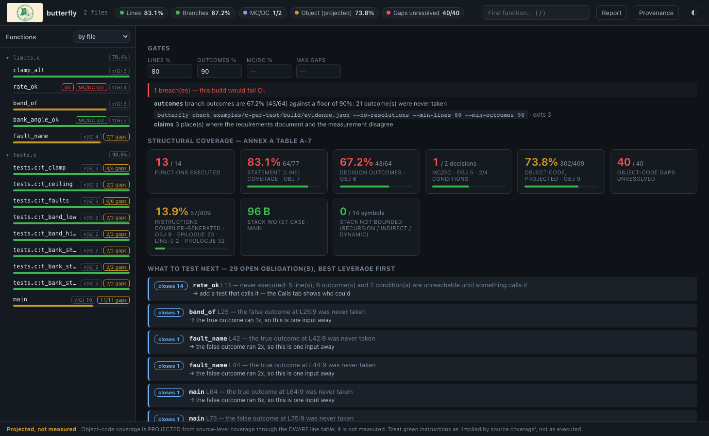
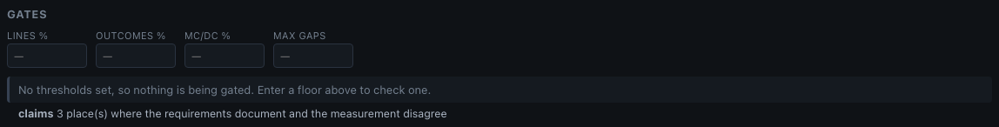
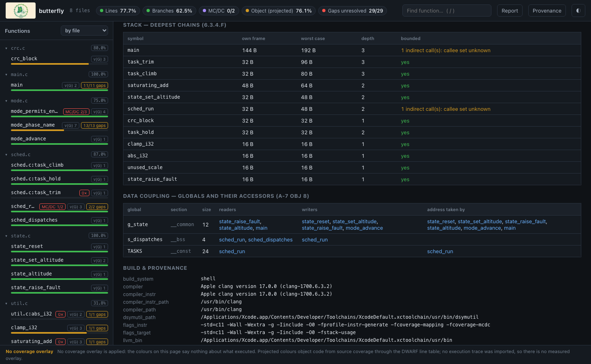
Reproduce it
From the repository root, with butterfly on your PATH (cargo install --path crates/cli, or export PATH="$PWD/target/debug:$PATH" after cargo build). The build and section commands are the ones the capture run executed. The viewer was started by the browser-check harness on a free --listen port, with a sidecar of its own where the butterfly serve line names none and a token file of its own where the line names one. Function and file ids in a URL are assigned at ingest; if yours differ, pick the function in the sidebar.
# examples/c-per-test ./examples/c-per-test/build.sh butterfly ingest examples/c-per-test/build --source-root examples/c-per-test --tests examples/c-per-test/build/tests --requirements examples/c-per-test/requirements.txt -o examples/c-per-test/build/evidence.json butterfly requirements examples/c-per-test/llr.yaml -o examples/c-per-test/build/requirements.json # examples/c-lib ./examples/c-lib/build.sh butterfly ingest examples/c-lib/build --source-root examples/c-lib -o examples/c-lib/build/evidence.json # the viewer (Ctrl-C to stop) butterfly serve examples/c-per-test/build/evidence.json # open http://127.0.0.1:8787/#/overview (select Projected; Gates: lines 80, outcomes 90) # open http://127.0.0.1:8787/#/overview # the viewer (Ctrl-C to stop) butterfly serve examples/c-lib/build/evidence.json # open http://127.0.0.1:8787/#/overview
Control-flow graph with coverage overlay
capturedsection issue #174Each function's control-flow graph is built from its object code, not its source: one box per basic block, coloured by coverage, and each conditional edge labelled with the machine condition that takes it — an unconditional edge carries none, except the ↺ that marks a loop's back edge. Hovering a block marks the source lines it came from; hovering a source line marks its blocks. clamp_altitude in examples/c is 8 blocks and 26 instructions at -O0.
Backed by examples/c.
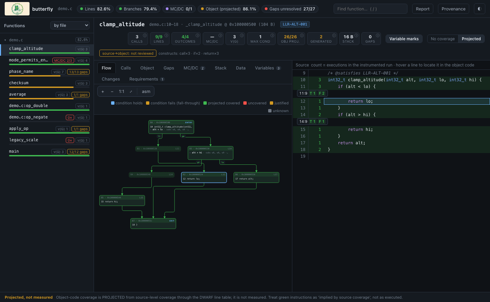
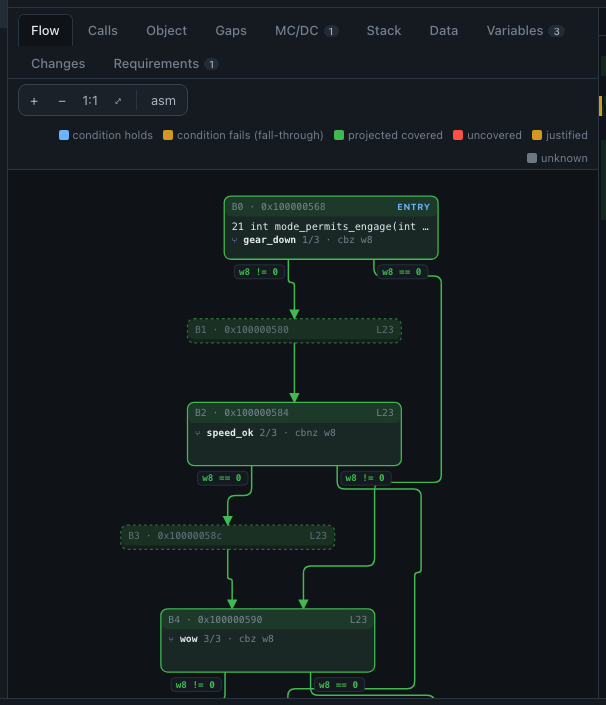
demo.c:23: each conditional edge carries the machine condition that takes it. (v02-flow-mcdc.png, 47 KiB)Reproduce it
From the repository root, with butterfly on your PATH (cargo install --path crates/cli, or export PATH="$PWD/target/debug:$PATH" after cargo build). The build and section commands are the ones the capture run executed. The viewer was started by the browser-check harness on a free --listen port, with a sidecar of its own where the butterfly serve line names none and a token file of its own where the line names one. Function and file ids in a URL are assigned at ingest; if yours differ, pick the function in the sidebar.
# examples/c ./examples/c/build.sh butterfly ingest examples/c/build --source-root examples/c -o examples/c/build/evidence.json # the viewer (Ctrl-C to stop) butterfly serve examples/c/build/evidence.json # open http://127.0.0.1:8787/#/fn/0/flow (select Projected) # open http://127.0.0.1:8787/#/fn/1/flow (select Projected)
Expandable call graph
capturedsection issue #175Callers and callees grow in place, one click at a time. Recursion and mutual recursion link back to the node already drawn instead of repeating it; an indirect call shows its candidate targets labelled as candidates; a call to a symbol whose object code is not in the evidence is marked external and cannot be opened. examples/c-callgraph (13 functions) has one of each. Past a cap on how many neighbours a node draws in one direction, the rest are counted on a "+N more" control that reveals them; demo::main in examples/rust calls more functions than the cap.
Backed by examples/c-callgraph, examples/rust.
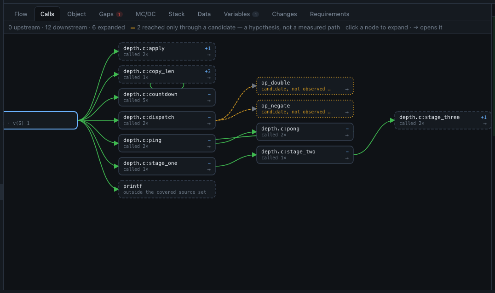
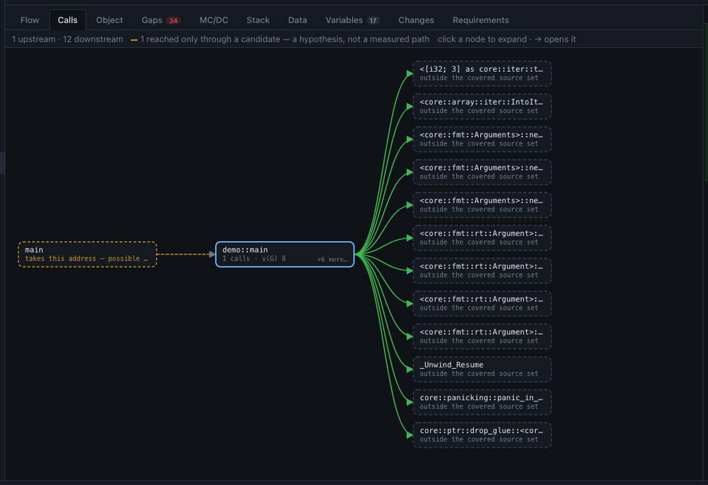
Reproduce it
From the repository root, with butterfly on your PATH (cargo install --path crates/cli, or export PATH="$PWD/target/debug:$PATH" after cargo build). The build and section commands are the ones the capture run executed. The viewer was started by the browser-check harness on a free --listen port, with a sidecar of its own where the butterfly serve line names none and a token file of its own where the line names one. Function and file ids in a URL are assigned at ingest; if yours differ, pick the function in the sidebar.
# examples/c-callgraph ./examples/c-callgraph/build.sh butterfly ingest examples/c-callgraph/build --source-root examples/c-callgraph -o examples/c-callgraph/build/evidence.json # examples/rust ./examples/rust/build.sh butterfly ingest examples/rust/build --source-root examples/rust -o examples/rust/build/evidence.json # the viewer (Ctrl-C to stop) butterfly serve examples/c-callgraph/build/evidence.json # open http://127.0.0.1:8787/#/fn/12/calls (select Projected) # the viewer (Ctrl-C to stop) butterfly serve examples/rust/build/evidence.json # open http://127.0.0.1:8787/#/fn/7/calls (select Projected)
Object-code view
capturedsection issue #176The disassembly of a function, interleaved with the source lines it came from, with a status per instruction. Instructions the compiler added on its own account are marked by origin — examples/c has 34 of 346 across 4 origins (prologue, epilogue, stack protector, line-0) — and an instruction that is not one of them shows the tag of its source line where the enclosing function tags that line, otherwise the function-level tags of the callee for code inlined from another function, otherwise the enclosing function's function-level tags. Where the tags it takes are empty the instruction shows none: the instructions of an untagged function, and code inlined from an untagged function even inside a tagged one. A compiler-generated instruction shows none either way. C++ symbols are shown demangled.
Backed by examples/c, examples/cpp.
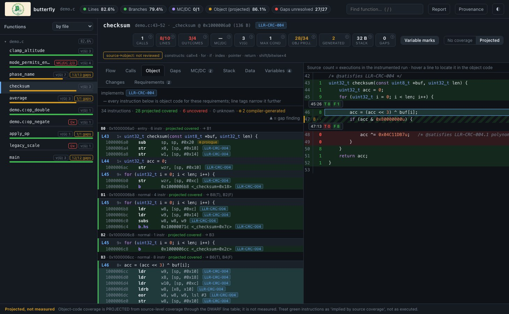
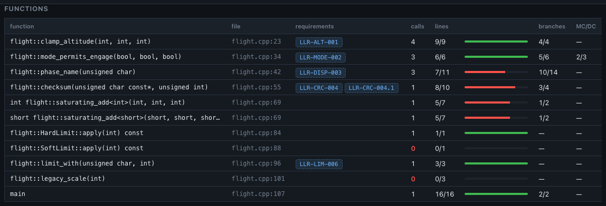
Reproduce it
From the repository root, with butterfly on your PATH (cargo install --path crates/cli, or export PATH="$PWD/target/debug:$PATH" after cargo build). The build and section commands are the ones the capture run executed. The viewer was started by the browser-check harness on a free --listen port, with a sidecar of its own where the butterfly serve line names none and a token file of its own where the line names one. Function and file ids in a URL are assigned at ingest; if yours differ, pick the function in the sidebar.
# examples/c ./examples/c/build.sh butterfly ingest examples/c/build --source-root examples/c -o examples/c/build/evidence.json # examples/cpp ./examples/cpp/build.sh butterfly ingest examples/cpp/build --source-root examples/cpp -o examples/cpp/build/evidence.json # the viewer (Ctrl-C to stop) butterfly serve examples/c/build/evidence.json # open http://127.0.0.1:8787/#/fn/3/object (select Projected) # the viewer (Ctrl-C to stop) butterfly serve examples/cpp/build/evidence.json # open http://127.0.0.1:8787/#/overview (select Projected)
Gaps and their resolutions
capturedsection issue #177Inside an analysed function, butterfly records a gap wherever one of its checks finds that source coverage cannot describe the object code — code with no source line, a branch or decision the object code and the source do not share, a call outside the covered source set, and the other kinds the Overview lists — classified by kind: examples/c has 27 across 6 kinds. A gap is a finding for a human. A reviewer records a resolution — a DO-178C §6.4.4.3 category or an analysis under §6.4.4.2.b, a justification, reviewer and date — which is validated and written to a sidecar file, never into the evidence.
Backed by examples/c.
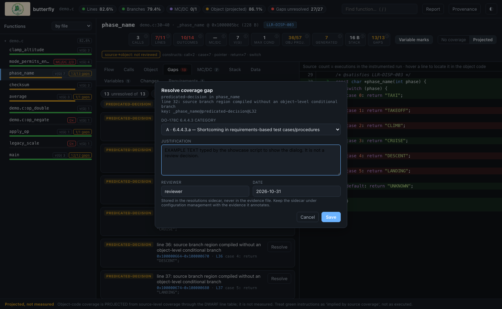
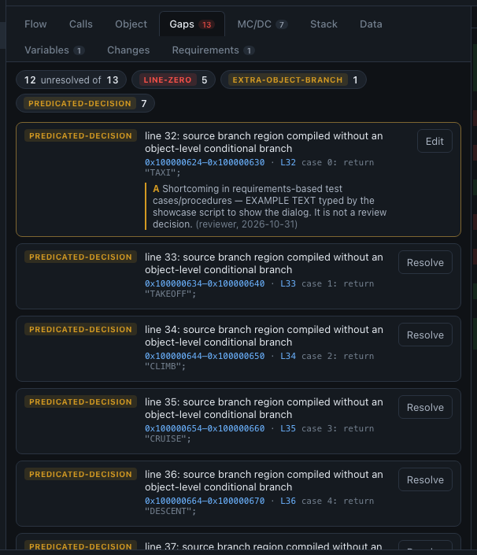
Reproduce it
From the repository root, with butterfly on your PATH (cargo install --path crates/cli, or export PATH="$PWD/target/debug:$PATH" after cargo build). The build and section commands are the ones the capture run executed. The viewer was started by the browser-check harness on a free --listen port, with a sidecar of its own where the butterfly serve line names none and a token file of its own where the line names one. Function and file ids in a URL are assigned at ingest; if yours differ, pick the function in the sidebar.
# examples/c ./examples/c/build.sh butterfly ingest examples/c/build --source-root examples/c -o examples/c/build/evidence.json # the viewer (Ctrl-C to stop) butterfly serve examples/c/build/evidence.json # open http://127.0.0.1:8787/#/fn/2/gaps (select Projected)
MC/DC
captured in part · 1 item not capturedsection issue #178For each decision: its conditions, how often each was true and false, and whether each condition's independence was shown. The decision at demo.c:23 in examples/c has 3 conditions, of which 2 are proven; for the one that is not, the tab says which input is missing. With an llvm-cov that exports test vectors the tab also lists the recorded vectors and, for each condition a pair of executed vectors isolates, that pair.
Backed by examples/c.
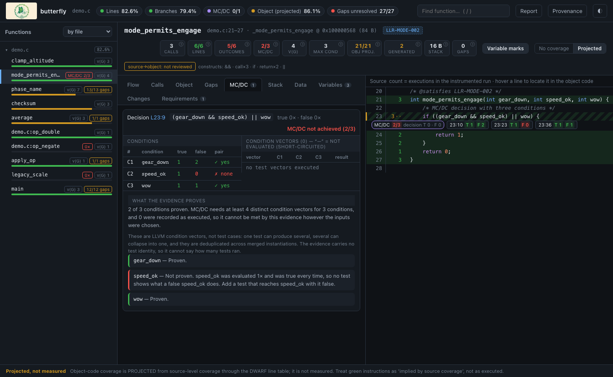
Reproduce it
From the repository root, with butterfly on your PATH (cargo install --path crates/cli, or export PATH="$PWD/target/debug:$PATH" after cargo build). The build and section commands are the ones the capture run executed. The viewer was started by the browser-check harness on a free --listen port, with a sidecar of its own where the butterfly serve line names none and a token file of its own where the line names one. Function and file ids in a URL are assigned at ingest; if yours differ, pick the function in the sidebar.
# examples/c ./examples/c/build.sh butterfly ingest examples/c/build --source-root examples/c -o examples/c/build/evidence.json # the viewer (Ctrl-C to stop) butterfly serve examples/c/build/evidence.json # open http://127.0.0.1:8787/#/fn/1/mcdc (select Projected)
Stack analysis
capturedsection issue #179For each function: its own frame, the worst-case stack below it and the chain of calls that reaches that worst case. Recursion, indirect calls, dynamic frames, frames of undetermined size, call chains deeper than the analysable depth and totals that overflow make a bound unknowable, and the figure is then marked not bounded with the reason rather than passed off as a worst case — the number beside it is the deepest chain butterfly could actually resolve, not a bound. Of the figures marked not bounded, only recursion with nothing else below it has no number at all; the panel shows ∞ in its place. In examples/c-lib, main has a 144-byte frame and a deepest known chain of 192 bytes (main → sched_run → state_raise_fault), reported as not bounded because of 1 indirect call: callee set unknown.
Backed by examples/c-lib.
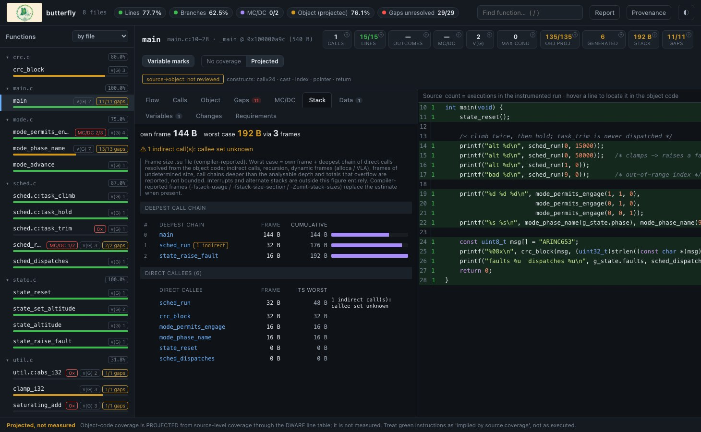
Reproduce it
From the repository root, with butterfly on your PATH (cargo install --path crates/cli, or export PATH="$PWD/target/debug:$PATH" after cargo build). The build and section commands are the ones the capture run executed. The viewer was started by the browser-check harness on a free --listen port, with a sidecar of its own where the butterfly serve line names none and a token file of its own where the line names one. Function and file ids in a URL are assigned at ingest; if yours differ, pick the function in the sidebar.
# examples/c-lib ./examples/c-lib/build.sh butterfly ingest examples/c-lib/build --source-root examples/c-lib -o examples/c-lib/build/evidence.json # the viewer (Ctrl-C to stop) butterfly serve examples/c-lib/build/evidence.json # open http://127.0.0.1:8787/#/fn/1/stack (select Projected)
Data coupling
capturedsection issue #180Which functions read, write or take the address of each global, across translation units (Table A-7 objective 8). In examples/c-lib, g_state is written by 4 functions in 2 source files; examples/cpp-lib references 6 globals.
Backed by examples/c-lib, examples/cpp-lib.
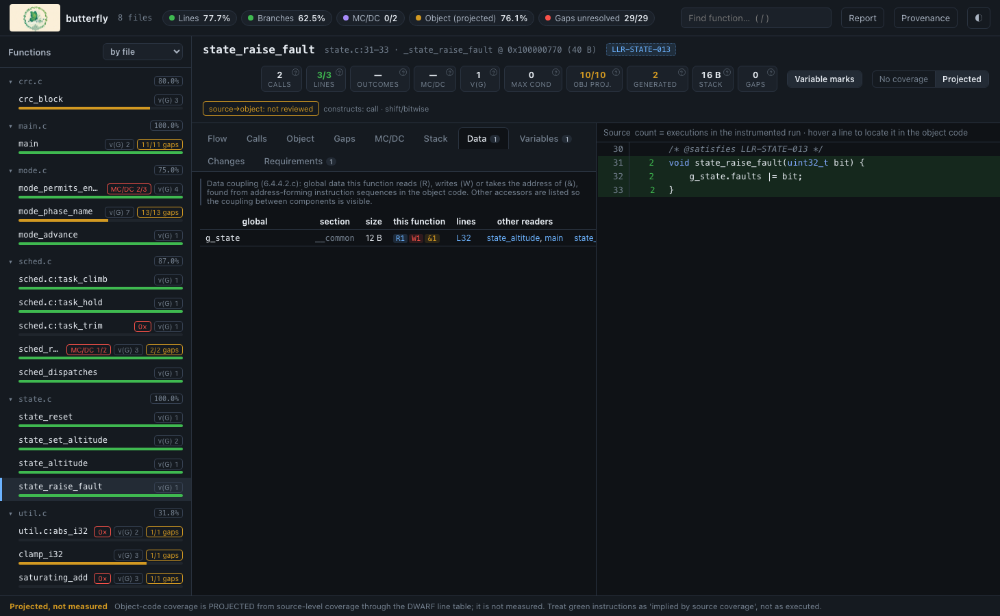
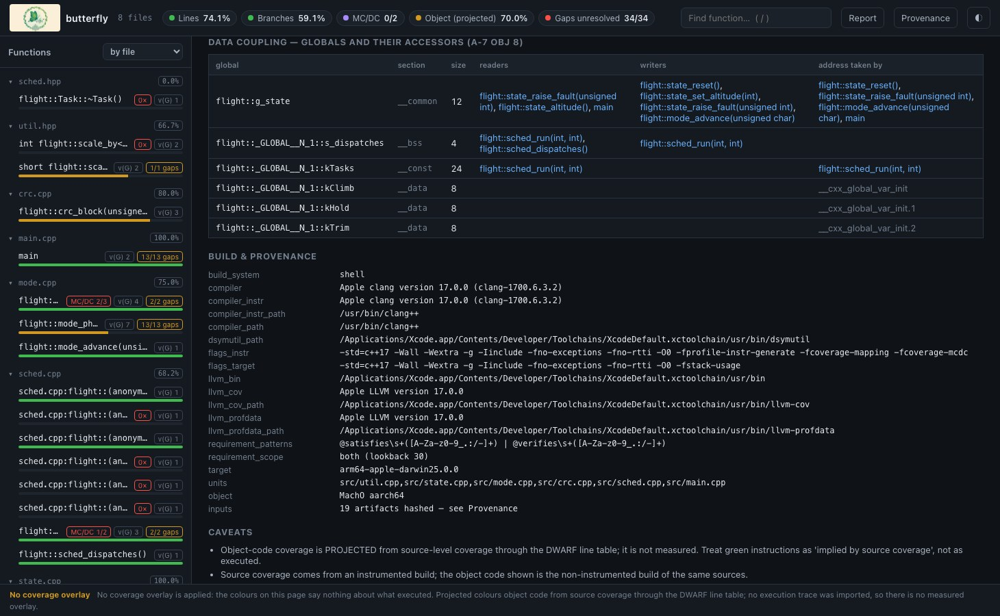
Reproduce it
From the repository root, with butterfly on your PATH (cargo install --path crates/cli, or export PATH="$PWD/target/debug:$PATH" after cargo build). The build and section commands are the ones the capture run executed. The viewer was started by the browser-check harness on a free --listen port, with a sidecar of its own where the butterfly serve line names none and a token file of its own where the line names one. Function and file ids in a URL are assigned at ingest; if yours differ, pick the function in the sidebar.
# examples/c-lib ./examples/c-lib/build.sh butterfly ingest examples/c-lib/build --source-root examples/c-lib -o examples/c-lib/build/evidence.json # examples/cpp-lib ./examples/cpp-lib/build.sh butterfly ingest examples/cpp-lib/build --source-root examples/cpp-lib -o examples/cpp-lib/build/evidence.json # the viewer (Ctrl-C to stop) butterfly serve examples/c-lib/build/evidence.json # open http://127.0.0.1:8787/#/fn/13/data (select Projected) # the viewer (Ctrl-C to stop) butterfly serve examples/cpp-lib/build/evidence.json # open http://127.0.0.1:8787/#/overview
Variables panel
capturedsection issue #181Parameters and locals from DWARF, and every instruction that touches each one's frame slot, numbered in static instruction order. Hovering a variable marks its declaration and every line that touches it. In checksum, acc is touched at 7 sites (44w 46r 46w 47r 48r 48w 51r: line, then r/w), and the loop counter i at lines that are not in ascending order (45w 45r 46r 45r 45w). The marking is optional: the Variable marks button turns it off.
Backed by examples/c, scripts/showcase/synthetic.cjs (hand-written viewer fixture).
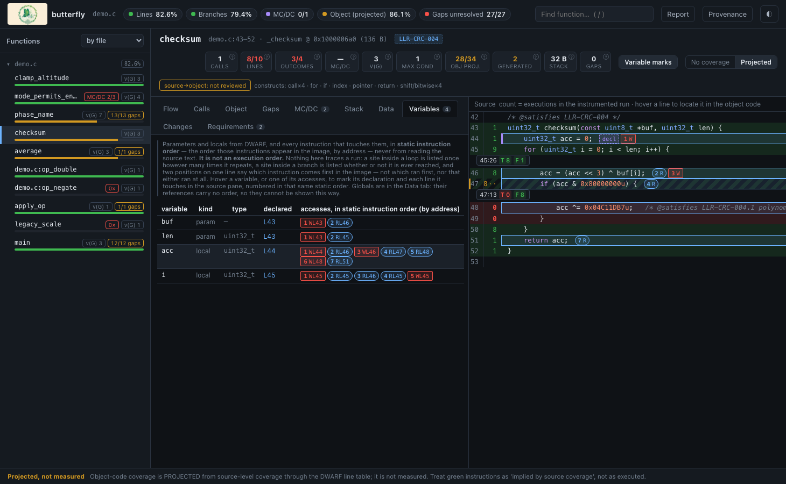
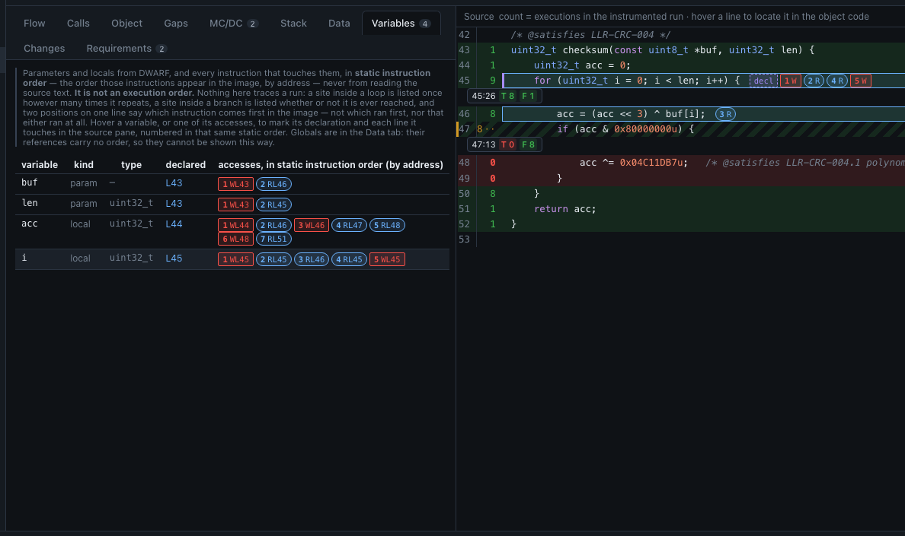
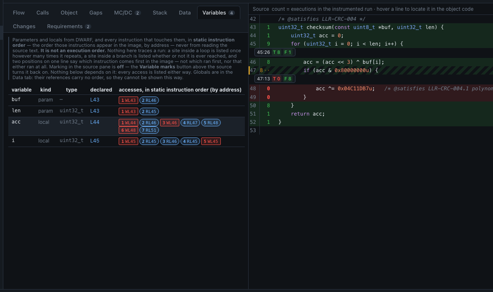
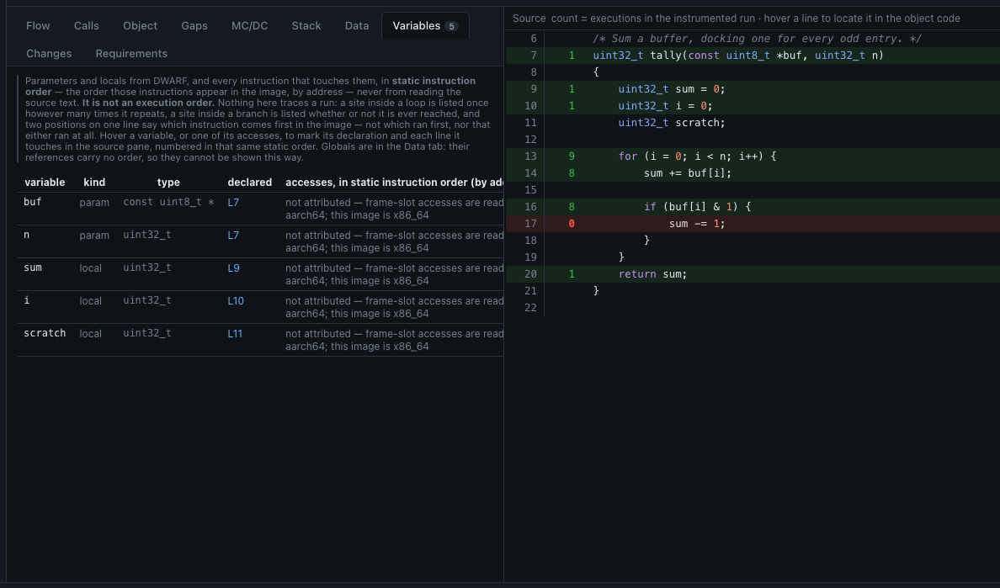
Reproduce it
From the repository root, with butterfly on your PATH (cargo install --path crates/cli, or export PATH="$PWD/target/debug:$PATH" after cargo build). The build and section commands are the ones the capture run executed. The viewer was started by the browser-check harness on a free --listen port, with a sidecar of its own where the butterfly serve line names none and a token file of its own where the line names one. Function and file ids in a URL are assigned at ingest; if yours differ, pick the function in the sidebar.
# examples/c ./examples/c/build.sh butterfly ingest examples/c/build --source-root examples/c -o examples/c/build/evidence.json # scripts/showcase/synthetic.cjs node scripts/showcase/synthetic.cjs vars-x86_64 target/showcase/vars-x86_64/evidence.json # the capture harness creates its scratch directory before it runs anything mkdir -p target/showcase # the viewer (Ctrl-C to stop) butterfly serve examples/c/build/evidence.json # open http://127.0.0.1:8787/#/fn/3/variables (select Projected) # open http://127.0.0.1:8787/#/fn/3/variables (select Projected; Variable marks off) # the viewer (Ctrl-C to stop) butterfly serve target/showcase/vars-x86_64/evidence.json # open http://127.0.0.1:8787/#/fn/0/variables (select Projected)
File view
capturedsection issue #185A whole source file instead of one function: a coverage minimap, a gutter showing how much object code each line produced, folding down to the findings or to the uncovered lines only, a requirement lens that highlights the lines tagged with the chosen requirement, and optional sticky function headers.
Backed by examples/c-lib.
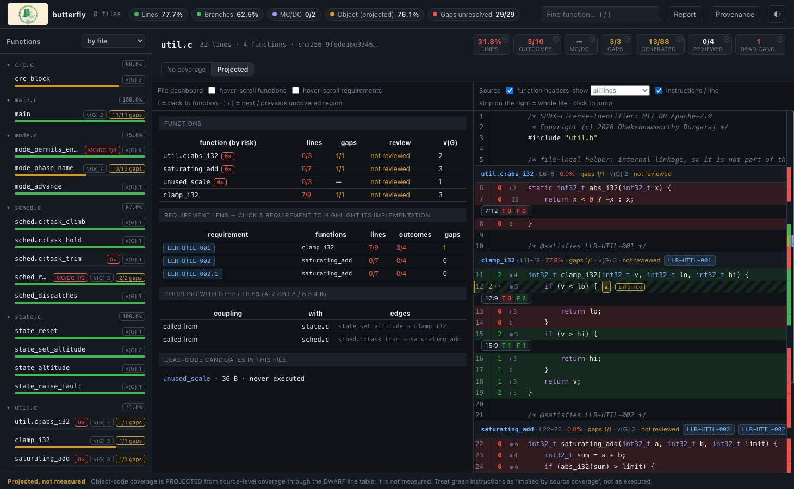
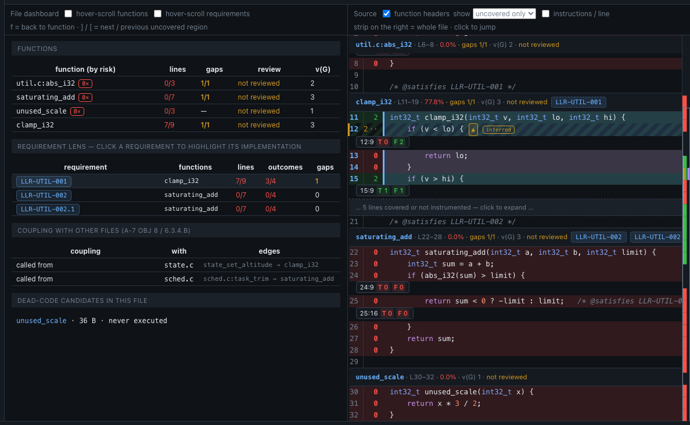
Reproduce it
From the repository root, with butterfly on your PATH (cargo install --path crates/cli, or export PATH="$PWD/target/debug:$PATH" after cargo build). The build and section commands are the ones the capture run executed. The viewer was started by the browser-check harness on a free --listen port, with a sidecar of its own where the butterfly serve line names none and a token file of its own where the line names one. Function and file ids in a URL are assigned at ingest; if yours differ, pick the function in the sidebar.
# examples/c-lib ./examples/c-lib/build.sh butterfly ingest examples/c-lib/build --source-root examples/c-lib -o examples/c-lib/build/evidence.json # the viewer (Ctrl-C to stop) butterfly serve examples/c-lib/build/evidence.json # open http://127.0.0.1:8787/#/file/7 (select Projected; function headers on) # open http://127.0.0.1:8787/#/file/7 (select Projected; show: uncovered only; function headers on)
Measured object-code coverage from an execution trace
capturedsection issue #164With an execution trace imported beside the coverage export, the Object tab shows each instruction under a projection and under a measurement, and they can disagree. Neither is always there to show: an instruction the line table places nowhere carries no projection — 44 of examples/rust-qemu's instructions ran with none — and an instruction the trace never reached carries no count, which is what the Measured overlay draws as never executed. The trace of examples/rust-qemu (qemu -d in_asm,exec) executed 257 of the evidence's 312 instructions and took 27 of its 42 branch outcomes; it disagrees with the projection at 65 instructions, of which 21 are projected covered and never ran. monitor::sum is that case in one screen: its source coverage is complete at 9/9 lines, and 3 of its 14 basic blocks were never entered — the bounds-check and overflow-panic paths rustc emits for its indexing and its arithmetic. The Object tab shows the same blocks under the Projected and the Measured overlay.
Backed by examples/rust-qemu. Verified locally; not built in hosted CI: examples/rust-qemu.
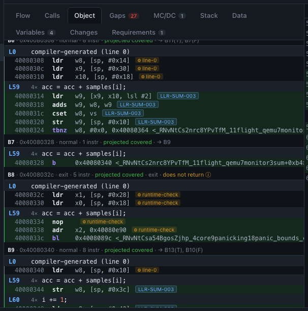
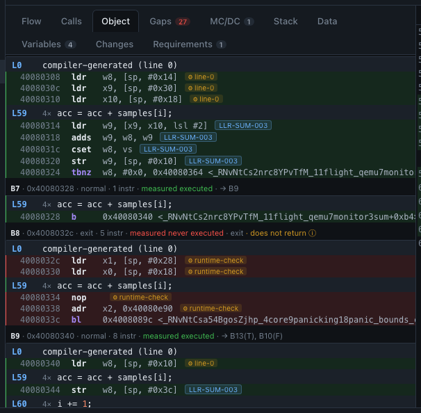
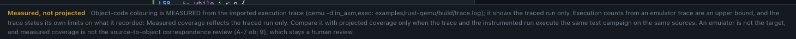
Reproduce it
From the repository root, with butterfly on your PATH (cargo install --path crates/cli, or export PATH="$PWD/target/debug:$PATH" after cargo build). The build and section commands are the ones the capture run executed. The viewer was started by the browser-check harness on a free --listen port, with a sidecar of its own where the butterfly serve line names none and a token file of its own where the line names one. Function and file ids in a URL are assigned at ingest; if yours differ, pick the function in the sidebar.
# examples/rust-qemu ./examples/rust-qemu/build.sh butterfly ingest examples/rust-qemu/build --source-root examples/rust-qemu -o examples/rust-qemu/build/evidence.json # the viewer (Ctrl-C to stop) butterfly serve examples/rust-qemu/build/evidence.json # open http://127.0.0.1:8787/#/fn/4/object (select Projected) # open http://127.0.0.1:8787/#/fn/4/object (select Measured)
Requirements and change
Change impact
capturedsection issue #182butterfly changes reads the repository's history with git log -L over each function's line range and records every commit and ticket that touched it, and whether it added or modified it. From that it derives what must be re-verified (DO-178C §12.1.1). Run on examples/c against this repository's own history, whose commit messages match none of the ticket patterns, every commit is reported as unticketed. When the evidence falls behind -- the repository has moved on, or an analysed source differs from the text that was analysed -- the viewer says the change history is stale, why, and what to re-run.
Backed by examples/c.
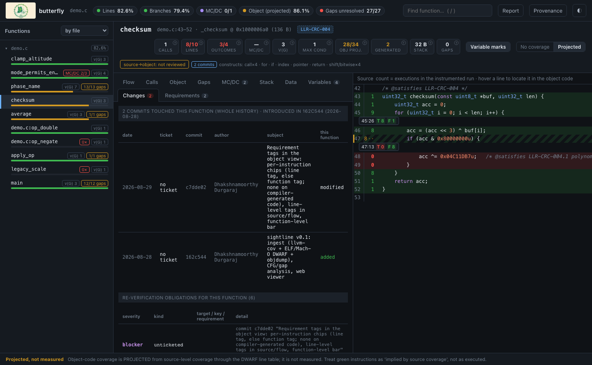
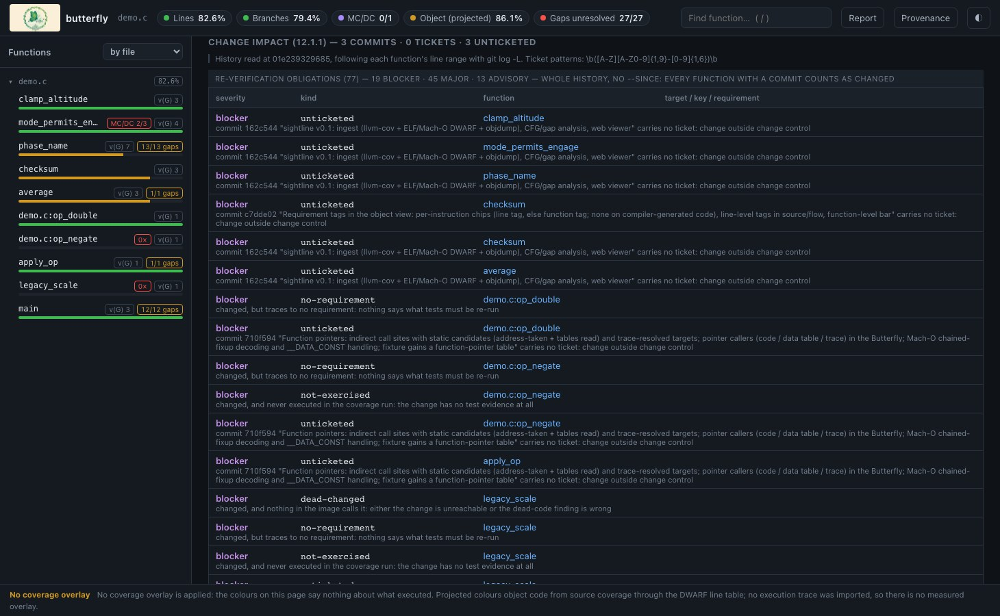
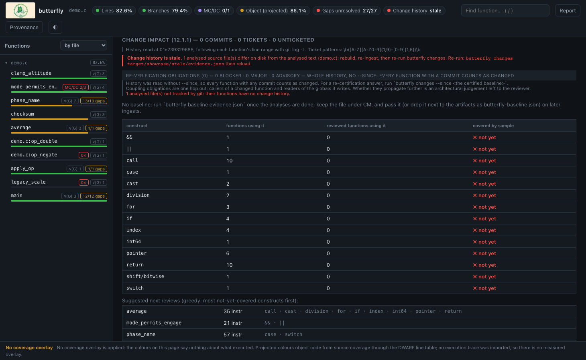
$ butterfly changes target/showcase/changes/evidence.json note : no resolutions sidecar found; the report records no reviews or justifications repo : <repo> @ 01e239329685 config : examples/c/butterfly.toml walked : 10 function(s) · 0 reused from cache · 0 skipped baseline : none (deleted functions cannot be found without one) history : 3 commit(s) touched 10 function(s) · 0 ticket(s) · 3 unticketed commit(s) impact : 77 obligation(s) — 13 advisory, 19 blocker, 45 major · no resolutions file wrote target/showcase/changes/evidence.json and cache target/showcase/changes/butterfly-changes.json exit 0
butterfly changes has read the history.$ echo '/* edited after the change history was read */' >> target/showcase/stale/demo.c exit 0
Reproduce it
From the repository root, with butterfly on your PATH (cargo install --path crates/cli, or export PATH="$PWD/target/debug:$PATH" after cargo build). The build and section commands are the ones the capture run executed. The viewer was started by the browser-check harness on a free --listen port, with a sidecar of its own where the butterfly serve line names none and a token file of its own where the line names one. Function and file ids in a URL are assigned at ingest; if yours differ, pick the function in the sidebar.
# examples/c ./examples/c/build.sh butterfly ingest examples/c/build --source-root examples/c -o examples/c/build/evidence.json # the capture harness creates its scratch directory before it runs anything mkdir -p target/showcase # this section mkdir -p target/showcase/changes && cp examples/c/build/evidence.json target/showcase/changes/evidence.json butterfly changes target/showcase/changes/evidence.json rm -rf target/showcase/stale && mkdir -p target/showcase/stale && cp examples/c/build.sh examples/c/demo.c examples/c/butterfly.toml target/showcase/stale/ && cp examples/llvm-env.sh examples/adapter.sh target/showcase/ && ./target/showcase/stale/build.sh && butterfly ingest target/showcase/stale/build --source-root target/showcase/stale -o target/showcase/stale/evidence.json && butterfly changes target/showcase/stale/evidence.json > /dev/null echo '/* edited after the change history was read */' >> target/showcase/stale/demo.c # the viewer (Ctrl-C to stop) butterfly serve target/showcase/changes/evidence.json # open http://127.0.0.1:8787/#/fn/3/changes (select Projected) # open http://127.0.0.1:8787/#/overview # the viewer (Ctrl-C to stop) butterfly serve target/showcase/stale/evidence.json # open http://127.0.0.1:8787/#/overview
Requirement text beside the code
capturedsection issue #183A @satisfies tag in the source shows the requirement's own text in place. The text is fetched per requirement ID from a sidecar, requirements.json, so the viewer never loads the whole requirements set. butterfly requirements writes that sidecar from YAML, CSV or Markdown.
Backed by examples/c-per-test.
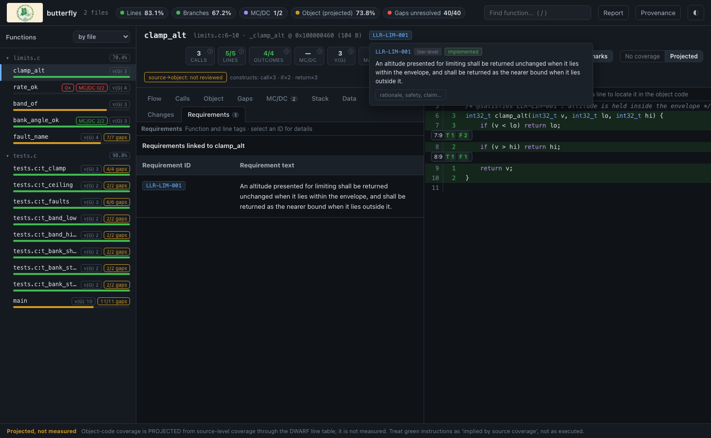
$ butterfly requirements examples/c-per-test/llr.yaml -o target/showcase/req-yaml.json read 4 low-level requirement(s) from 1 file(s) derived 1 of them, which the safety assessment must see (DO-178C 5.1.2.h) planned 1 not yet implemented, so code is not expected to reference them wrote target/showcase/req-yaml.json exit 0
$ butterfly requirements support/showcase/llr.csv -o target/showcase/req-csv.json read 1 low-level requirement(s) from 1 file(s) wrote target/showcase/req-csv.json exit 0
$ butterfly requirements support/showcase/llr.md -o target/showcase/req-md.json read 2 low-level requirement(s) from 1 file(s) derived 1 of them, which the safety assessment must see (DO-178C 5.1.2.h) wrote target/showcase/req-md.json exit 0
Reproduce it
From the repository root, with butterfly on your PATH (cargo install --path crates/cli, or export PATH="$PWD/target/debug:$PATH" after cargo build). The build and section commands are the ones the capture run executed. The viewer was started by the browser-check harness on a free --listen port, with a sidecar of its own where the butterfly serve line names none and a token file of its own where the line names one. Function and file ids in a URL are assigned at ingest; if yours differ, pick the function in the sidebar.
# examples/c-per-test ./examples/c-per-test/build.sh butterfly ingest examples/c-per-test/build --source-root examples/c-per-test --tests examples/c-per-test/build/tests --requirements examples/c-per-test/requirements.txt -o examples/c-per-test/build/evidence.json butterfly requirements examples/c-per-test/llr.yaml -o examples/c-per-test/build/requirements.json # the capture harness creates its scratch directory before it runs anything mkdir -p target/showcase # this section butterfly requirements examples/c-per-test/llr.yaml -o target/showcase/req-yaml.json butterfly requirements support/showcase/llr.csv -o target/showcase/req-csv.json butterfly requirements support/showcase/llr.md -o target/showcase/req-md.json # the viewer (Ctrl-C to stop) butterfly serve examples/c-per-test/build/evidence.json # open http://127.0.0.1:8787/#/fn/0/requirements (select Projected)
Requirements × tests, and the claims gate
capturedsection issue #184With one coverage export per test, the evidence records which test exercised which requirement's code (Table A-7 objectives 3 and 4): a requirement covered by named tests, one implemented but reached by no test, and one with no code at all each show as what they are. butterfly claims then compares the requirements document's own traceability with what was measured, and exits 3 where they disagree — in examples/c-per-test, on a claim that is wrong on purpose.
Backed by examples/c-per-test.
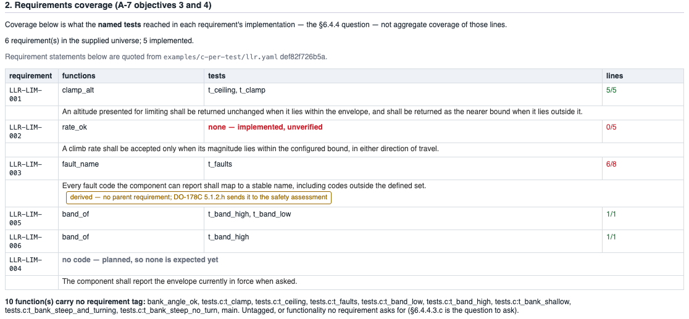
$ butterfly summary examples/c-per-test/build/evidence.json note : no resolutions sidecar found; the report records no reviews or justifications files 2 functions 14 (13 executed) lines 64/77 83.1% branches 43/64 67.2% MC/DC dec. 1/2 50.0% object 409 instr: 302 projected covered, 105 projected uncovered, 2 unknown gaps 40 {"extra-object-branch": 1, "helper-call": 12, "line-zero": 2, "predicated-decision": 4, "shared-line": 21} generated 57 instr compiler-generated {"epilogue": 23, "line-0": 2, "prologue": 32} stack worst case 96 B via main · 0 symbol(s) unbounded data 0 globals referenced, 0 function->global refs tests 8 run · 13/13 executed function(s) attributed to a named test t_band_high 3 function(s) t_band_low 3 function(s) t_bank_shallow 3 function(s) t_bank_steep_and_turning 3 function(s) t_bank_steep_no_turn 3 function(s) t_ceiling 3 function(s) t_clamp 3 function(s) t_faults 3 function(s) reqs 6 requirement(s) in the supplied universe, 5 implemented; lines covered by the named tests LLR-LIM-001 1 fn · 5/5 lines · tests: t_ceiling,t_clamp LLR-LIM-002 1 fn · 0/5 lines · tests: NO TEST LLR-LIM-003 1 fn · 6/8 lines · tests: t_faults LLR-LIM-005 1 fn · 1/1 lines · tests: t_band_high,t_band_low LLR-LIM-006 1 fn · 1/1 lines · tests: t_band_high LLR-LIM-004 NO CODE — in the supplied universe, tagged nowhere 10 function(s) carry no requirement tag (extraneous, or untagged) next 29 open test obligation(s); the top of the worklist: [closes 14] rate_ok L13 — never executed: 5 line(s), 6 outcome(s) and 2 condition(s) are unreachable until something calls it → add a test that calls it — the Calls tab shows who could [closes 1] band_of L25 — the false outcome at L25:9 was never taken → the true outcome ran 1x, so this is one input away [closes 1] fault_name L42 — the true outcome at L42:9 was never taken → the false outcome ran 2x, so this is one input away [closes 1] fault_name L44 — the true outcome at L44:9 was never taken → the false outcome ran 2x, so this is one input away [closes 1] main L64 — the true outcome at L64:9 was never taken → the false outcome ran 8x, so this is one input away … and 11 more (unresolved gaps are reviewer work, and are not in this list) exit 0
$ butterfly claims examples/c-per-test/build/evidence.json --requirements examples/c-per-test/build/requirements.json checked 4 requirement(s): 2 agreed, 0 not checked, 1 with nothing claimed claims 3 disagreement(s): tag-not-in-document 2, test-does-not-reach 1 [test-does-not-reach] LLR-LIM-002 document: src/tests.c::t_clamp evidence: `t_clamp` ran, but executed none of the lines this requirement claims [tag-not-in-document] LLR-LIM-005 document: not in the requirements document evidence: `band_of` is tagged with it in the source [tag-not-in-document] LLR-LIM-006 document: not in the requirements document evidence: `band_of` is tagged with it in the source exit 3
Reproduce it
From the repository root, with butterfly on your PATH (cargo install --path crates/cli, or export PATH="$PWD/target/debug:$PATH" after cargo build). The build and section commands are the ones the capture run executed. The viewer was started by the browser-check harness on a free --listen port, with a sidecar of its own where the butterfly serve line names none and a token file of its own where the line names one. Function and file ids in a URL are assigned at ingest; if yours differ, pick the function in the sidebar.
# examples/c-per-test ./examples/c-per-test/build.sh butterfly ingest examples/c-per-test/build --source-root examples/c-per-test --tests examples/c-per-test/build/tests --requirements examples/c-per-test/requirements.txt -o examples/c-per-test/build/evidence.json butterfly requirements examples/c-per-test/llr.yaml -o examples/c-per-test/build/requirements.json # the capture harness creates its scratch directory before it runs anything mkdir -p target/showcase # this section butterfly summary examples/c-per-test/build/evidence.json butterfly claims examples/c-per-test/build/evidence.json --requirements examples/c-per-test/build/requirements.json # exits 3 butterfly report examples/c-per-test/build/evidence.json -o target/showcase/v12-report.html # open target/showcase/v12-report.html in a browser
Builds, baselines and reports
Comparing optimisation levels
capturedsection issue #186butterfly build compiles the same sources at several optimisation levels (O0, O1, O2, Os here) against one instrumented run, and the Compare page sets them side by side. The source coverage is the same in every variant — it is one coverage export — and the object code is not: clamp_altitude is 8 blocks with 0 gaps at -O0, and 1 block with 2 predicated-decision gaps at -O2, where neither source decision has a conditional branch that can be located in the object code.
Backed by examples/c.
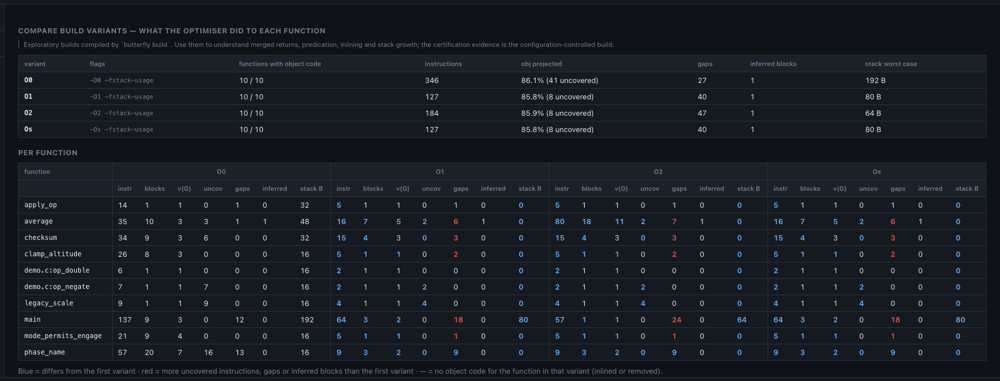
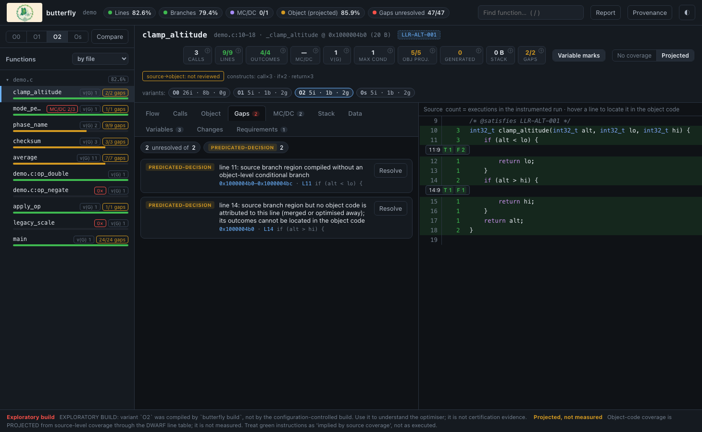
clamp_altitude in the -O2 variant: the Gaps tab reports 2 predicated-decision gaps — one for each source decision — with the reason, and the variant chips under the header give instructions, blocks and gaps at each level. (v14-o2-gaps.png, 185 KiB)Reproduce it
From the repository root, with butterfly on your PATH (cargo install --path crates/cli, or export PATH="$PWD/target/debug:$PATH" after cargo build). The build and section commands are the ones the capture run executed. The viewer was started by the browser-check harness on a free --listen port, with a sidecar of its own where the butterfly serve line names none and a token file of its own where the line names one. Function and file ids in a URL are assigned at ingest; if yours differ, pick the function in the sidebar.
# examples/c butterfly build examples/c/butterfly-build.toml # the viewer (Ctrl-C to stop) butterfly serve examples/c/variants/evidence-O0.json examples/c/variants/evidence-O1.json examples/c/variants/evidence-O2.json examples/c/variants/evidence-Os.json # open http://127.0.0.1:8787/#/compare # open http://127.0.0.1:8787/#/fn/0/gaps (select Projected; variant O2)
The static report
capturedsection issue #187butterfly report writes one self-contained HTML file with no scripts, meant to be read away from the tool and printed: a summary against Table A-7, the requirements coverage, provenance, every function, the gaps with any recorded resolutions, the source-to-object review sample, the caveats and, where the evidence carries them, dead-code candidates and stack usage. It carries the text of a requirement the code reaches whenever a statement for it was supplied — butterfly report reads the file named by --requirements, else <stem>.requirements.json or requirements.json beside the evidence, in that order — because a reader of the file cannot fetch it. A tag with no statement is named without one, and evidence with no requirements sidecar beside it yields a report with no requirement text at all.
Backed by examples/c-per-test.
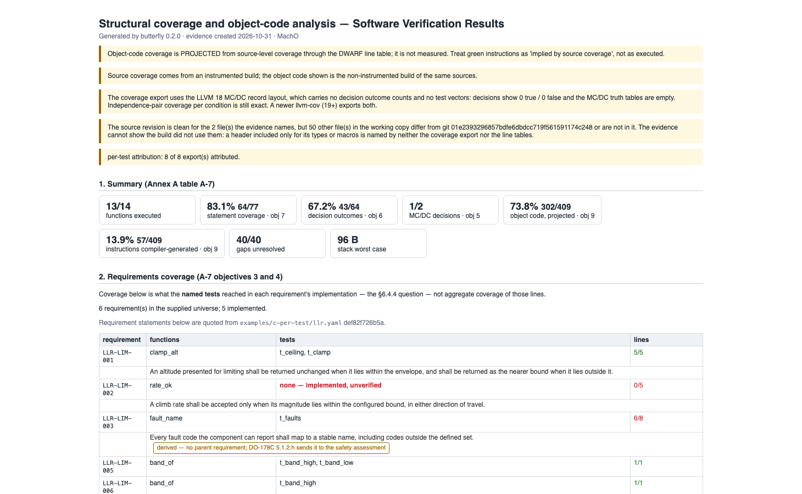
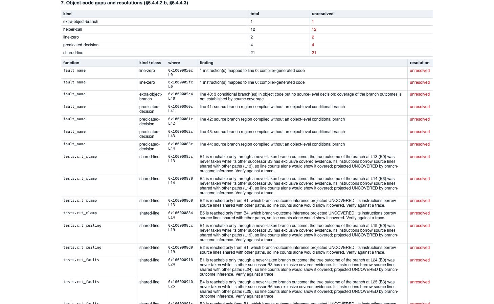
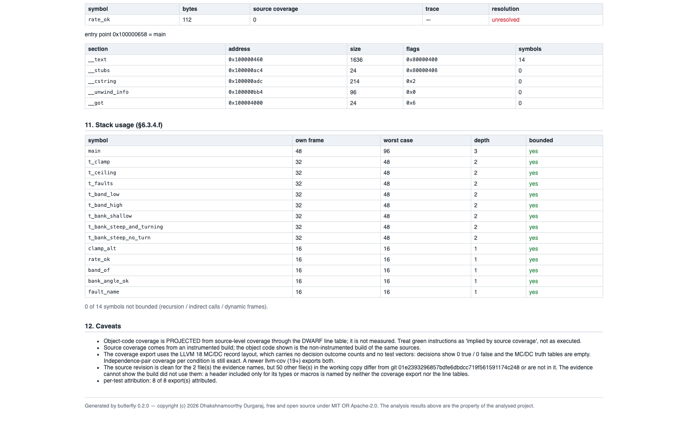
$ butterfly report examples/c-per-test/build/evidence.json -o target/showcase/v15-report.html note : no resolutions sidecar found; the report records no reviews or justifications requirements: 4 statement(s) from 1 document(s) 2 tag(s) in the source have no statement; the report names them without one wrote target/showcase/v15-report.html exit 0
$ grep -c '<script' target/showcase/v15-report.html 0 exit 1
Reproduce it
From the repository root, with butterfly on your PATH (cargo install --path crates/cli, or export PATH="$PWD/target/debug:$PATH" after cargo build). The build and section commands are the ones the capture run executed. The viewer was started by the browser-check harness on a free --listen port, with a sidecar of its own where the butterfly serve line names none and a token file of its own where the line names one. Function and file ids in a URL are assigned at ingest; if yours differ, pick the function in the sidebar.
# examples/c-per-test ./examples/c-per-test/build.sh butterfly ingest examples/c-per-test/build --source-root examples/c-per-test --tests examples/c-per-test/build/tests --requirements examples/c-per-test/requirements.txt -o examples/c-per-test/build/evidence.json butterfly requirements examples/c-per-test/llr.yaml -o examples/c-per-test/build/requirements.json # the capture harness creates its scratch directory before it runs anything mkdir -p target/showcase # this section butterfly report examples/c-per-test/build/evidence.json -o target/showcase/v15-report.html grep -c '<script' target/showcase/v15-report.html # exits 1 # open target/showcase/v15-report.html in a browser
Analysis baseline
capturedsection issue #192butterfly baseline freezes the compiler, its flags, the source constructs in use and a per-function fingerprint of the normalised object code. An ingest given the baseline with --baseline is compared against it, and a source-to-object review recorded on a function that has changed since is marked STALE. A butterfly-baseline.json in the directory the ingest reads is found without the flag (#238); with neither, the evidence says baseline: null and marks nothing. Changing one constant in checksum — the CRC polynomial — leaves it at 34 instructions and 9 blocks, exactly as before (34 and 9). The comparison reports it as changed because its source hash changed, and the last command below shows that its object-code fingerprint changed as well: counts alone are not a fingerprint.
Backed by examples/c.
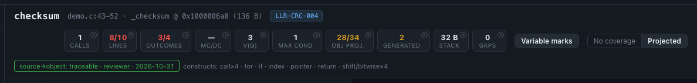
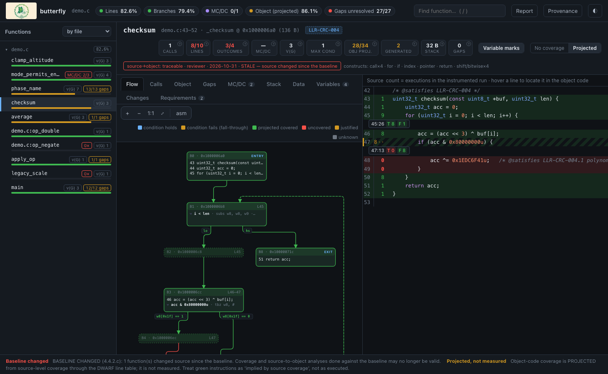
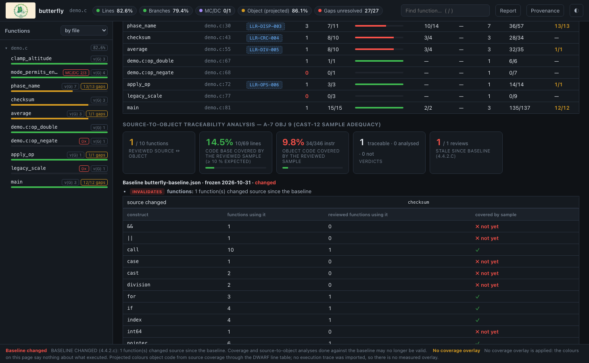
$ butterfly baseline target/showcase/baseline/before.json -o target/showcase/baseline/butterfly-baseline.json baseline: 10 functions, 14 constructs, compiler `Apple clang version 17.0.0 (clang-1700.6.3.2)`, flags `-std=c11 -Wall -Wextra -g -O0 -fstack-usage` wrote target/showcase/baseline/butterfly-baseline.json — keep it under configuration management next to the evidence exit 0
$ butterfly ingest target/showcase/baseline/build --source-root target/showcase/baseline --baseline target/showcase/baseline/butterfly-baseline.json -o target/showcase/baseline/after.json 2>&1 | grep '^baseline' baseline changed (1 difference(s); 1 source-changed, 0 object-changed functions) exit 0
createdUnix stamp each records when it was written.$ butterfly baseline target/showcase/baseline/after.json -o target/showcase/baseline/after-baseline.json > /dev/null 2>&1 && diff target/showcase/baseline/butterfly-baseline.json target/showcase/baseline/after-baseline.json | grep Sha256 < "sourceSha256": "ebffc9e5a122865348f0b67b218f57b62f1163a2b40595e21a4d499e00c24720", > "sourceSha256": "25a95cb03c93b75d699efd9dedbf8c741e5f22cf8098b42f6db2bced7f1ae0c2", < "objectSha256": "4b7ebb4bb0edf01e6ce0cdca14c397aefb264a4f5a1fe33896521bc7b683220f", > "objectSha256": "0e61b9022b2f75a14b5d945f3eb85a676018f87bbf4c8de7d958ba4d52405c26", exit 0
Reproduce it
From the repository root, with butterfly on your PATH (cargo install --path crates/cli, or export PATH="$PWD/target/debug:$PATH" after cargo build). The build and section commands are the ones the capture run executed. The viewer was started by the browser-check harness on a free --listen port, with a sidecar of its own where the butterfly serve line names none and a token file of its own where the line names one. Function and file ids in a URL are assigned at ingest; if yours differ, pick the function in the sidebar.
# examples/c ./examples/c/build.sh butterfly ingest examples/c/build --source-root examples/c -o examples/c/build/evidence.json # the capture harness creates its scratch directory before it runs anything mkdir -p target/showcase # this section rm -rf target/showcase/baseline && mkdir -p target/showcase/baseline && cp examples/c/build.sh examples/c/demo.c examples/c/butterfly.toml target/showcase/baseline/ && cp examples/llvm-env.sh examples/adapter.sh target/showcase/ ./target/showcase/baseline/build.sh && butterfly ingest target/showcase/baseline/build --source-root target/showcase/baseline -o target/showcase/baseline/before.json butterfly baseline target/showcase/baseline/before.json -o target/showcase/baseline/butterfly-baseline.json sed 's/0x04C11DB7u/0x1EDC6F41u/' examples/c/demo.c > target/showcase/baseline/demo.c && ./target/showcase/baseline/build.sh butterfly ingest target/showcase/baseline/build --source-root target/showcase/baseline --baseline target/showcase/baseline/butterfly-baseline.json -o target/showcase/baseline/after.json 2>&1 | grep '^baseline' butterfly baseline target/showcase/baseline/after.json -o target/showcase/baseline/after-baseline.json > /dev/null 2>&1 && diff target/showcase/baseline/butterfly-baseline.json target/showcase/baseline/after-baseline.json | grep Sha256 # the viewer (Ctrl-C to stop) butterfly serve target/showcase/baseline/before.json --resolutions target/showcase/baseline/resolutions.json # open http://127.0.0.1:8787/#/fn/3/flow (select Projected) # the viewer (Ctrl-C to stop) butterfly serve target/showcase/baseline/after.json --resolutions target/showcase/baseline/resolutions.json # open http://127.0.0.1:8787/#/fn/3/flow (select Projected) # open http://127.0.0.1:8787/#/overview
From the terminal and in CI
Gates
capturedsection issue #188butterfly check turns the evidence into an exit status for CI: floors on line, outcome and MC/DC coverage, a ceiling on unresolved gaps, and no-regression against a prior evidence file. It prints one line per breach and exits 3; with no breach it exits 0. The viewer's Gates box gives the same verdict by calling the same function, and prints the equivalent command.
Backed by examples/c.
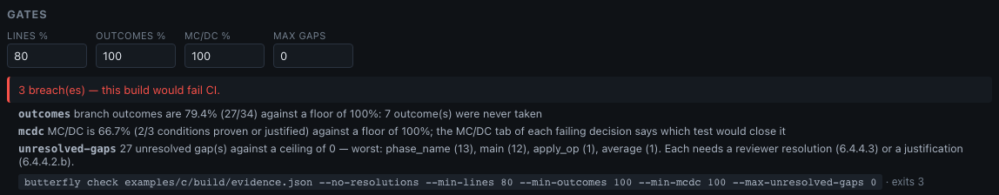
examples/c, with the resolutions sidecar explicitly disabled so that the run does not depend on one (CI passes no --no-resolutions): no breach, nothing printed, exit 0. It is --no-resolutions that makes it silent — without that flag a passing run still prints a note saying no sidecar was found, because the gap ceiling and the MC/DC floor are judged against one (#213).$ butterfly check examples/c/build/evidence.json --no-resolutions --min-lines 75 --min-outcomes 70 --max-unresolved-gaps 40 --no-regression examples/c/build/evidence.json exit 0
$ butterfly check examples/c/build/evidence.json --no-resolutions --min-lines 80 --min-outcomes 100 --min-mcdc 100 --max-unresolved-gaps 0 BREACH outcomes branch outcomes are 79.4% (27/34) against a floor of 100%: 7 outcome(s) were never taken BREACH mcdc MC/DC is 66.7% (2/3 conditions proven or justified) against a floor of 100%; the MC/DC tab of each failing decision says which test would close it BREACH unresolved-gaps 27 unresolved gap(s) against a ceiling of 0 — worst: phase_name (13), main (12), apply_op (1), average (1). Each needs a reviewer resolution (6.4.4.3) or a justification (6.4.4.2.b). FAIL 3 breach(es) in examples/c/build/evidence.json exit 3
Reproduce it
From the repository root, with butterfly on your PATH (cargo install --path crates/cli, or export PATH="$PWD/target/debug:$PATH" after cargo build). The build and section commands are the ones the capture run executed. The viewer was started by the browser-check harness on a free --listen port, with a sidecar of its own where the butterfly serve line names none and a token file of its own where the line names one. Function and file ids in a URL are assigned at ingest; if yours differ, pick the function in the sidebar.
# examples/c ./examples/c/build.sh butterfly ingest examples/c/build --source-root examples/c -o examples/c/build/evidence.json # this section butterfly check examples/c/build/evidence.json --no-resolutions --min-lines 75 --min-outcomes 70 --max-unresolved-gaps 40 --no-regression examples/c/build/evidence.json butterfly check examples/c/build/evidence.json --no-resolutions --min-lines 80 --min-outcomes 100 --min-mcdc 100 --max-unresolved-gaps 0 # exits 3 # the viewer (Ctrl-C to stop) butterfly serve examples/c/build/evidence.json # open http://127.0.0.1:8787/#/overview (Gates: lines 80, outcomes 100, mcdc 100, unresolved gaps 0)
butterfly doctor
capturedsection issue #189A preflight for a build directory. The mistakes that ruin coverage evidence raise no error — they produce evidence that looks complete and is wrong — so doctor looks for them before ingest and grades each as WRONG, WEAKER or a note. Beside each WRONG or WEAKER finding it names the fix, keyed by whatever causes the mistake: build.sh, make, CMake and Bazel where the build system is at fault — as in both such findings below — and clang, gcc or a fix that applies anywhere for most of the rest; a note's fix is printed only with --verbose. It exits 3 when something would make the evidence wrong.
Backed by examples/c.
$ butterfly doctor examples/c/build directory : examples/c/build coverage : examples/c/build/coverage.json object : examples/c/build/demo stack : 1 .su file(s) note 1 instrumented object(s) ignored: demo-instr exit 0
$ butterfly doctor target/showcase/broken directory : target/showcase/broken coverage : target/showcase/broken/coverage.json stack : 0 .su file(s) WRONG every object here is instrumented: demo-instr (Clang instrumentation) why: the object code shown, disassembled and measured for stack is the *analysis* build. With only an instrumented binary there is nothing to project coverage onto, and analysing the instrumented one would measure the counters instead of the delivered code build.sh build twice from one source list: the second build with no --coverage / -fprofile-* / -fcoverage-* flag, and ingest *that* binary make a second target sharing $(SRCS), e.g. `app: CFLAGS += -g -fstack-usage` with no coverage flags cmake a second `add_executable` over the same source list; put the coverage flags only on the instrumented target with `target_compile_options` bazel a second `cc_binary` on the same `srcs`; keep `--collect_code_coverage` off that target WEAKER no .su files in target/showcase/broken why: every stack frame is then estimated from the prologue rather than stated by the compiler, which is weaker evidence for §6.3.4.f build.sh add -fstack-usage to the analysis build, and move the .su files into the directory you ingest make add -fstack-usage to CFLAGS for the analysis target; .su lands beside each .o cmake add -fstack-usage, then collect from CMakeFiles/<target>.dir/ — they do not land in the build root (see examples/build-systems/cmake/collect_su.cmake) bazel declare the .su files as outputs, or the sandbox discards them note no build-info.txt 1 would make the evidence wrong, 1 would make it weaker than it looks. exit 3
Reproduce it
From the repository root, with butterfly on your PATH (cargo install --path crates/cli, or export PATH="$PWD/target/debug:$PATH" after cargo build). The build and section commands are the ones the capture run executed. The viewer was started by the browser-check harness on a free --listen port, with a sidecar of its own where the butterfly serve line names none and a token file of its own where the line names one. Function and file ids in a URL are assigned at ingest; if yours differ, pick the function in the sidebar.
# examples/c ./examples/c/build.sh butterfly ingest examples/c/build --source-root examples/c -o examples/c/build/evidence.json # the capture harness creates its scratch directory before it runs anything mkdir -p target/showcase # this section butterfly doctor examples/c/build rm -rf target/showcase/broken && mkdir -p target/showcase/broken && cp examples/c/build/coverage.json examples/c/build/demo-instr target/showcase/broken/ butterfly doctor target/showcase/broken # exits 3
One command: butterfly run
capturedsection issue #190butterfly run does build, doctor, ingest and report in one step — and serves the result unless told not to — then prints a phase report saying what happened in each and what is worth knowing.
Backed by examples/c.
$ butterfly run examples/c --no-serve ── [1/4] build ───────────────────────────────────────────────────── running <repo>/examples/c/build.sh (in <repo>/examples/c) ok: build-info.txt coverage.json demo demo-instr demo-instr.dSYM demo.dSYM demo.profdata demo.profraw demo.su obj run.txt ── [2/4] doctor ──────────────────────────────────────────────────── directory : examples/c/build coverage : examples/c/build/coverage.json object : examples/c/build/demo stack : 1 .su file(s) note 1 instrumented object(s) ignored: demo-instr ── [3/4] ingest ──────────────────────────────────────────────────── wrote examples/c/build/evidence.json ── [4/4] report ──────────────────────────────────────────────────── wrote examples/c/build/report.html ─────────────────────────────── summary ─────────────────────────────── ok build <repo>/examples/c/build.sh exited 0 ok doctor nothing to fix ok ingest 10 function(s); 5 not fully covered 2 function(s) were never entered by any test ok report examples/c/build/report.html no resolutions sidecar yet, so no reviews are recorded ─────────────────────────────────────────────────────────────────────── Nothing failed. 2 thing(s) worth knowing, listed above. serve it with: butterfly serve examples/c/build/evidence.json exit 0
Reproduce it
From the repository root, with butterfly on your PATH (cargo install --path crates/cli, or export PATH="$PWD/target/debug:$PATH" after cargo build). The build and section commands are the ones the capture run executed. The viewer was started by the browser-check harness on a free --listen port, with a sidecar of its own where the butterfly serve line names none and a token file of its own where the line names one. Function and file ids in a URL are assigned at ingest; if yours differ, pick the function in the sidebar.
# examples/c ./examples/c/build.sh butterfly ingest examples/c/build --source-root examples/c -o examples/c/build/evidence.json # this section butterfly run examples/c --no-serve
Build-system integration
capturedsection issue #191Worked CMake, make and Bazel integrations build examples/c-lib's sources, and scripts/verify-build-systems.sh checks that each gives the same evidence as the library's own build.sh on its summary counts -- files, functions, symbols, lines and branch outcomes covered and in total, and gaps. It also takes one stack-usage file away from each system's output and requires butterfly ingest to refuse it, and builds the Bazel target without -c dbg and without its LLVM directory and requires the rule itself to refuse. A shell build template you copy and own, templates/build.sh, has its own test, templates/test.sh: it builds a scratch project cleanly, then requires the build to fail when dsymutil fails (on macOS) and to refuse sources that share a basename.
Backed by examples/c-lib.
$ ./scripts/verify-build-systems.sh == building butterfly == == reference: examples/c-lib == reference tuple 8 18 18 87 112 25 40 29 (files functions symbols linesCovered linesTotal branchesCovered branchesTotal gaps) c-lib (one .su removed) PASS (refused) c-lib (coverage tools) PASS == build systems == cmake PASS (identical to c-lib) cmake (one .su removed) PASS (refused) cmake (tools recorded) PASS cmake (coverage tools) PASS cmake (unpaired LLVM) PASS (refused) make PASS (identical to c-lib) make (one .su removed) PASS (refused) make (tools recorded) PASS make (coverage tools) PASS make (unpaired LLVM) PASS (refused) bazel PASS (identical to c-lib) bazel (one .su removed) PASS (refused) bazel (coverage tools) PASS bazel (without compilation mode)PASS (refused) bazel (without llvm_bin) PASS (refused) ALL INSTALLED BUILD SYSTEMS MATCH c-lib exit 0
$ ./templates/test.sh template-test: ok (clean build, dsymutil failure, basename collision) exit 0
Reproduce it
From the repository root, with butterfly on your PATH (cargo install --path crates/cli, or export PATH="$PWD/target/debug:$PATH" after cargo build). The build and section commands are the ones the capture run executed. The viewer was started by the browser-check harness on a free --listen port, with a sidecar of its own where the butterfly serve line names none and a token file of its own where the line names one. Function and file ids in a URL are assigned at ingest; if yours differ, pick the function in the sidebar.
# examples/c-lib ./examples/c-lib/build.sh butterfly ingest examples/c-lib/build --source-root examples/c-lib -o examples/c-lib/build/evidence.json # this section ./scripts/verify-build-systems.sh ./templates/test.sh
What you are trusting
Provenance and the honesty features
capturedsection issue #194Every evidence file lists the inputs it was built from, each with its SHA-256 (7 for examples/c), and the caveats that apply to it (4 here). The compiler and its flags are there when the build left a build-info.txt beside its artifacts, as examples/c does; with no such file the evidence records neither, and butterfly doctor reports its absence as a note. The bar at the foot of every page names the overlay that is selected and the caveat that goes with it: that no overlay is applied, that the colouring is projected and not measured, or that it is measured and not projected (#209).
Backed by examples/c.
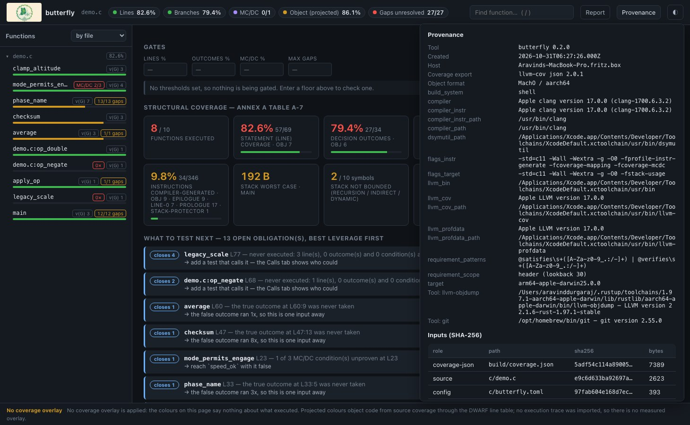
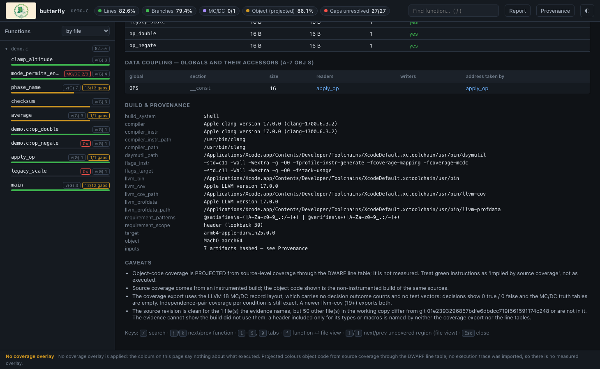
Reproduce it
From the repository root, with butterfly on your PATH (cargo install --path crates/cli, or export PATH="$PWD/target/debug:$PATH" after cargo build). The build and section commands are the ones the capture run executed. The viewer was started by the browser-check harness on a free --listen port, with a sidecar of its own where the butterfly serve line names none and a token file of its own where the line names one. Function and file ids in a URL are assigned at ingest; if yours differ, pick the function in the sidebar.
# examples/c ./examples/c/build.sh butterfly ingest examples/c/build --source-root examples/c -o examples/c/build/evidence.json # the viewer (Ctrl-C to stop) butterfly serve examples/c/build/evidence.json # open http://127.0.0.1:8787/#/overview
Security posture
capturedsection issue #195The viewer serves the complete source text of the analysed project, and is built accordingly. It binds loopback by default. A network listener is refused without --allow-remote, refused again without --insecure-http, and needs a token, which comes from --token-file, BUTTERFLY_TOKEN, --token generate or the deprecated literal --token, and is accepted from a #token= fragment, never from a ?token= query. Every artefact butterfly ingest reads — the coverage export, each source, the objects, a trace, the auxiliary files — is sized against a per-kind cap and a budget for the whole run before it is read, as are the evidence and the resolutions sidecar butterfly serve loads; a refusal names the variable that would raise the cap.
Backed by examples/c.
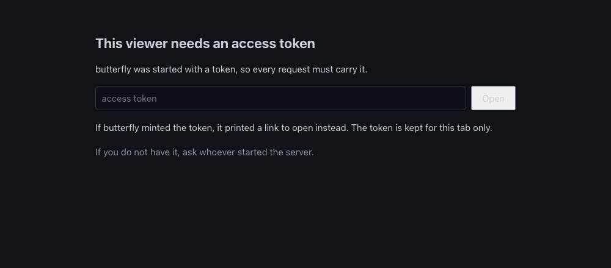
$ butterfly serve examples/c/build/evidence.json --listen 192.0.2.10:8787 Error: refusing to bind 192.0.2.10:8787: that address is reachable from the network, and the evidence contains the full source text. Serve on loopback and use an SSH tunnel: ssh -N -L 8787:127.0.0.1:8787 <host> To expose it anyway, pass --allow-remote --insecure-http (see --help for what the second one acknowledges). exit 1
$ butterfly serve examples/c/build/evidence.json --listen 192.0.2.10:8787 --allow-remote Error: refusing to serve 192.0.2.10:8787 over plain HTTP. butterfly's built-in server has no TLS. Off loopback, the evidence -- which embeds the complete source text -- and any bearer token cross the network in clear: anyone on the path can read both, and replay the token to change review decisions. Instead, either: * keep butterfly on loopback (--listen 127.0.0.1:8787) and forward the port from your own machine: ssh -N -L 8787:127.0.0.1:8787 <host> * or put a TLS-terminating reverse proxy in front of it. On the same host, keep butterfly on loopback and no flag is needed; on another host, pass --insecure-http to acknowledge the plain-HTTP hop between the proxy and butterfly. exit 1
$ BUTTERFLY_MAX_COVERAGE_MB=1 butterfly ingest --coverage target/showcase/oversized/coverage.json --object examples/c/build/demo --source-root examples/c -o target/showcase/oversized/evidence.json coverage : target/showcase/oversized/coverage.json object : examples/c/build/demo Error: target/showcase/oversized/coverage.json: this coverage export is 2.0 MiB and butterfly reads at most 1.0 MiB of one. If the project really is this large, raise BUTTERFLY_MAX_COVERAGE_MB; the limit is there so a crafted or truncated artifact fails here rather than by exhausting memory. exit 1
Reproduce it
From the repository root, with butterfly on your PATH (cargo install --path crates/cli, or export PATH="$PWD/target/debug:$PATH" after cargo build). The build and section commands are the ones the capture run executed. The viewer was started by the browser-check harness on a free --listen port, with a sidecar of its own where the butterfly serve line names none and a token file of its own where the line names one. Function and file ids in a URL are assigned at ingest; if yours differ, pick the function in the sidebar.
# examples/c ./examples/c/build.sh butterfly ingest examples/c/build --source-root examples/c -o examples/c/build/evidence.json # the capture harness creates its scratch directory before it runs anything mkdir -p target/showcase # this section butterfly serve examples/c/build/evidence.json --listen 192.0.2.10:8787 # exits 1 butterfly serve examples/c/build/evidence.json --listen 192.0.2.10:8787 --allow-remote # exits 1 mkdir -p target/showcase/oversized && head -c 2097152 /dev/zero > target/showcase/oversized/coverage.json BUTTERFLY_MAX_COVERAGE_MB=1 butterfly ingest --coverage target/showcase/oversized/coverage.json --object examples/c/build/demo --source-root examples/c -o target/showcase/oversized/evidence.json # exits 1 (umask 077 && echo showcase-demo-token-not-a-secret > target/showcase/token.txt) # the viewer (Ctrl-C to stop) butterfly serve examples/c/build/evidence.json --token-file target/showcase/token.txt # open http://127.0.0.1:8787/
Dead code and the source-to-object review
capturedsection issue #196A dead-code candidate (§6.4.4.3.c) is a symbol nothing in the image calls, whose address nothing takes, that is not the entry point, and whose name does not mark it as one (a name containing main, start, reset, vector, handler or exception is passed over); resolving one shows the reasons it is a candidate. Among the functions of examples/c-lib that is unused_scale alone: task_trim never ran either, but the scheduler's dispatch table holds its address, so it is untested, not dead. The source-to-object review sample (CAST-12) shows how many functions a reviewer has recorded a review on, how much of the code and the object code they cover, and which source constructs the sample reaches.
Backed by examples/c-lib.
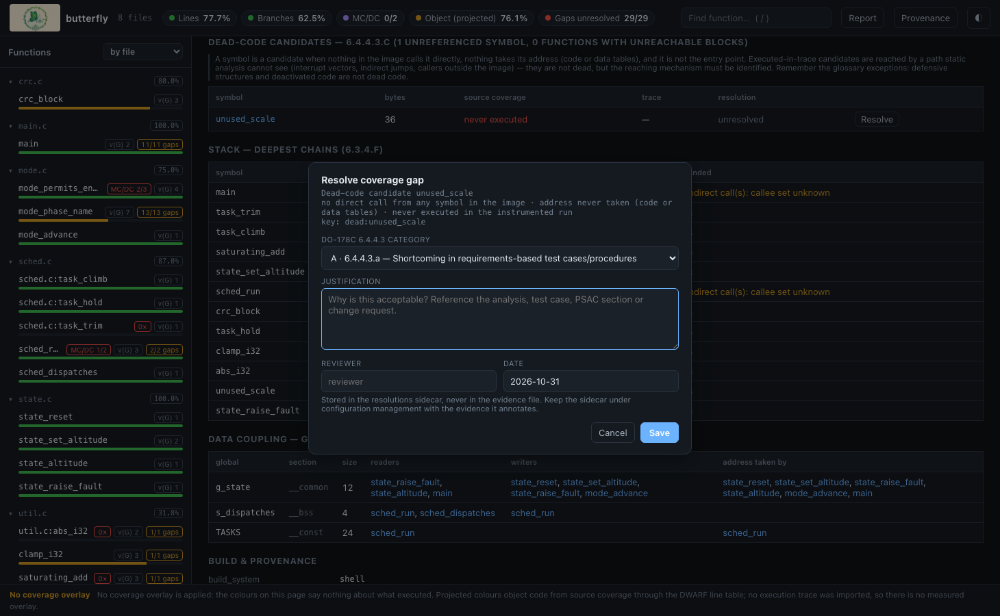
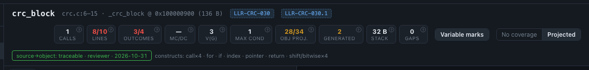
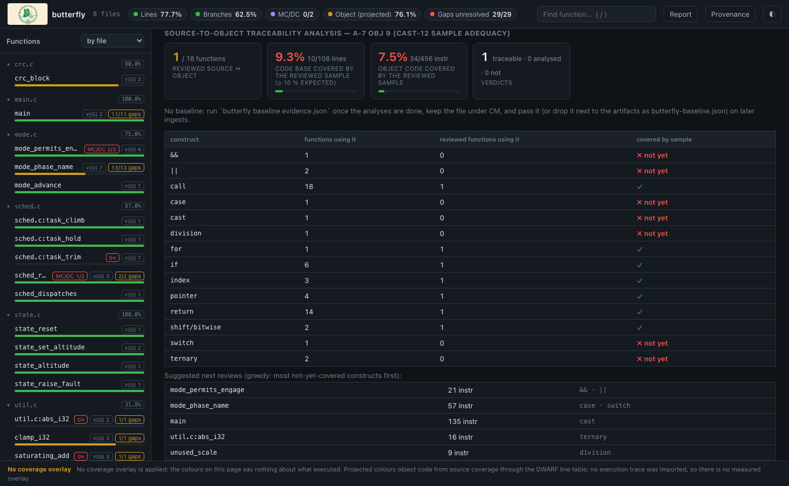
Reproduce it
From the repository root, with butterfly on your PATH (cargo install --path crates/cli, or export PATH="$PWD/target/debug:$PATH" after cargo build). The build and section commands are the ones the capture run executed. The viewer was started by the browser-check harness on a free --listen port, with a sidecar of its own where the butterfly serve line names none and a token file of its own where the line names one. Function and file ids in a URL are assigned at ingest; if yours differ, pick the function in the sidebar.
# examples/c-lib ./examples/c-lib/build.sh butterfly ingest examples/c-lib/build --source-root examples/c-lib -o examples/c-lib/build/evidence.json # the capture harness creates its scratch directory before it runs anything mkdir -p target/showcase # this section rm -rf target/showcase/v24 && mkdir -p target/showcase/v24 # the viewer (Ctrl-C to stop) butterfly serve examples/c-lib/build/evidence.json --resolutions target/showcase/v24/resolutions.json # open http://127.0.0.1:8787/#/overview # open http://127.0.0.1:8787/#/fn/0/flow (select Projected)
Getting around and getting started
Go to definition
capturedsection issue #193With an optional index written by butterfly tags (Universal Ctags), an identifier in the source pane becomes a jump target: to the function view when it is an analysed function, to the file view at that line when it is a type, macro or static defined in a file the evidence carries. Nothing is underlined at rest; hovering shows what is a link.
Backed by examples/c-lib.
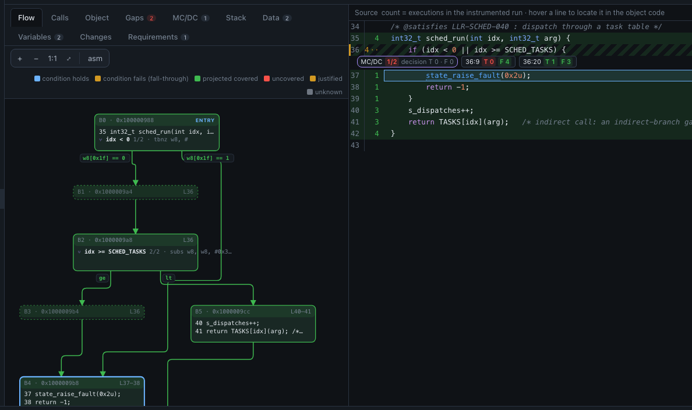
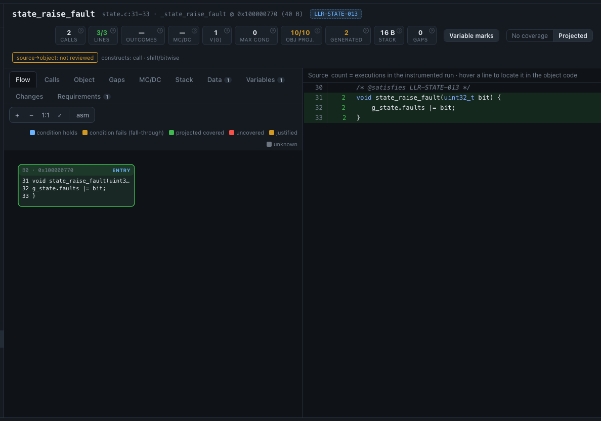
$ butterfly tags examples/c-lib/build/evidence.json tags : 80 definition(s) — 36 in evidence files, 44 in headers/elsewhere, 18 linked to analysed functions wrote examples/c-lib/build/evidence.tags.json (Universal Ctags 6.2.1, Copyright (C) 2015-2025 Universal Ctags Team) exit 0
Reproduce it
From the repository root, with butterfly on your PATH (cargo install --path crates/cli, or export PATH="$PWD/target/debug:$PATH" after cargo build). The build and section commands are the ones the capture run executed. The viewer was started by the browser-check harness on a free --listen port, with a sidecar of its own where the butterfly serve line names none and a token file of its own where the line names one. Function and file ids in a URL are assigned at ingest; if yours differ, pick the function in the sidebar.
# needs Universal Ctags on PATH: the `ctags` that ships with macOS is BSD ctags and `butterfly tags` rejects it # examples/c-lib ./examples/c-lib/build.sh butterfly ingest examples/c-lib/build --source-root examples/c-lib -o examples/c-lib/build/evidence.json # this section butterfly tags examples/c-lib/build/evidence.json # the viewer (Ctrl-C to stop) butterfly serve examples/c-lib/build/evidence.json # open http://127.0.0.1:8787/#/fn/8/flow (select Projected) # open http://127.0.0.1:8787/#/fn/13 (select Projected)
Finding your way around
capturedsection issue #197Search narrows the function list as you type. Every function, tab, file and line has its own URL, so a finding can be sent to a colleague as a link. The theme switches between dark and light and is remembered. The keyboard shortcuts are listed at the foot of the Overview, as in the last screenshot.
Backed by examples/c-lib.
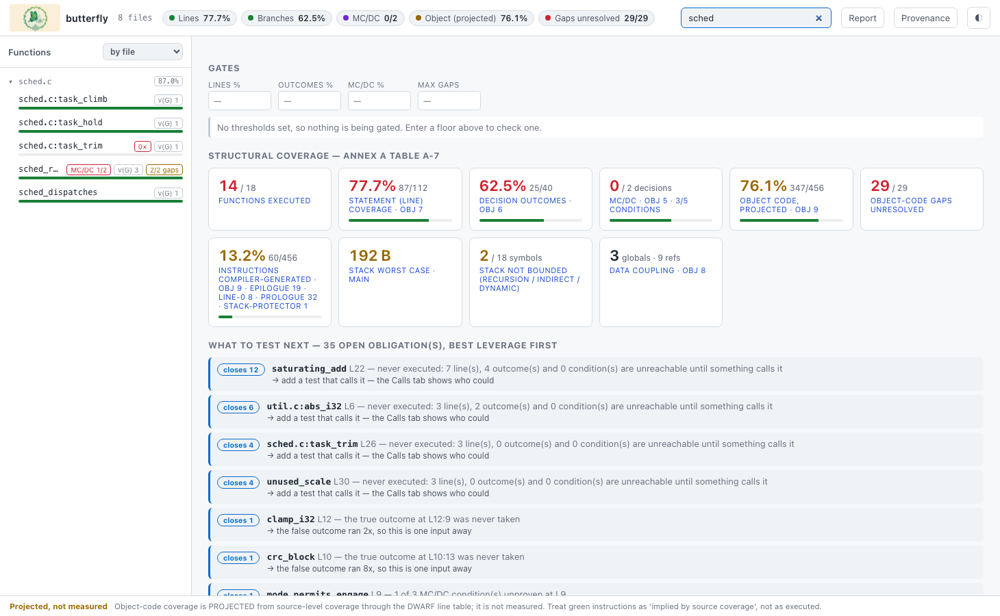
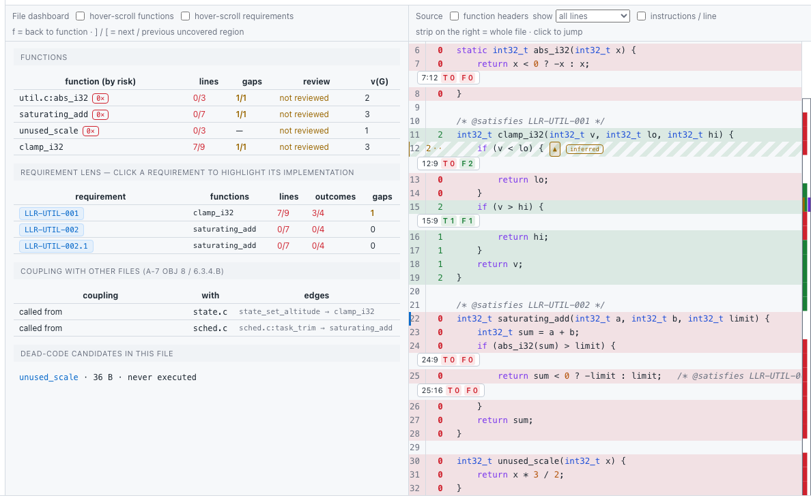
Reproduce it
From the repository root, with butterfly on your PATH (cargo install --path crates/cli, or export PATH="$PWD/target/debug:$PATH" after cargo build). The build and section commands are the ones the capture run executed. The viewer was started by the browser-check harness on a free --listen port, with a sidecar of its own where the butterfly serve line names none and a token file of its own where the line names one. Function and file ids in a URL are assigned at ingest; if yours differ, pick the function in the sidebar.
# examples/c-lib ./examples/c-lib/build.sh butterfly ingest examples/c-lib/build --source-root examples/c-lib -o examples/c-lib/build/evidence.json # the viewer (Ctrl-C to stop) butterfly serve examples/c-lib/build/evidence.json # open http://127.0.0.1:8787/#/overview (select Projected; light theme) # open http://127.0.0.1:8787/#/file/7/L22 (select Projected; light theme) # open http://127.0.0.1:8787/#/overview
Language and toolchain support
capturedsection issue #198What this repository has actually tried, as a table: its language constructs, architectures, object formats and toolchains, and the tool's own viewer, command-line, build-system and documentation features beside them, each marked supported, handled with caveats, or not supported. Every row that claims support or caveats names an example directory that exists; every supported row also names a test that reads that example, and a language or toolchain row names the file and the line inside that example where the construct is. A row that is not supported gives its reason instead. A Rust test re-checks all of that whenever the suite runs — including that a supported row's example is built by CI, and that the pattern the row gives still matches within a few lines of the line it cites — so a claim cannot outlive the example behind it. The table itself follows the last section of this page.
Backed by examples/c, examples/c-lib, examples/c-per-test, examples/c-callgraph, examples/cpp, examples/cpp-lib, examples/rust-qemu. Verified locally; not built in hosted CI: examples/rust-qemu.
$ cargo test -q --locked -p butterfly-ingest --test support_matrix running 23 tests ....................... test result: ok. 23 passed; 0 failed; 0 ignored; 0 measured; 0 filtered out; finished in 0.15s exit 0
Reproduce it
From the repository root, with butterfly on your PATH (cargo install --path crates/cli, or export PATH="$PWD/target/debug:$PATH" after cargo build). The build and section commands are the ones the capture run executed. The viewer was started by the browser-check harness on a free --listen port, with a sidecar of its own where the butterfly serve line names none and a token file of its own where the line names one. Function and file ids in a URL are assigned at ingest; if yours differ, pick the function in the sidebar.
# examples/c ./examples/c/build.sh butterfly ingest examples/c/build --source-root examples/c -o examples/c/build/evidence.json # examples/c-lib ./examples/c-lib/build.sh butterfly ingest examples/c-lib/build --source-root examples/c-lib -o examples/c-lib/build/evidence.json # examples/c-per-test ./examples/c-per-test/build.sh butterfly ingest examples/c-per-test/build --source-root examples/c-per-test --tests examples/c-per-test/build/tests --requirements examples/c-per-test/requirements.txt -o examples/c-per-test/build/evidence.json butterfly requirements examples/c-per-test/llr.yaml -o examples/c-per-test/build/requirements.json # examples/c-callgraph ./examples/c-callgraph/build.sh butterfly ingest examples/c-callgraph/build --source-root examples/c-callgraph -o examples/c-callgraph/build/evidence.json # examples/cpp ./examples/cpp/build.sh butterfly ingest examples/cpp/build --source-root examples/cpp -o examples/cpp/build/evidence.json # examples/cpp-lib ./examples/cpp-lib/build.sh butterfly ingest examples/cpp-lib/build --source-root examples/cpp-lib -o examples/cpp-lib/build/evidence.json # examples/rust-qemu ./examples/rust-qemu/build.sh butterfly ingest examples/rust-qemu/build --source-root examples/rust-qemu -o examples/rust-qemu/build/evidence.json # this section cargo build --locked --tests -p butterfly-ingest cargo test -q --locked -p butterfly-ingest --test support_matrix
Quickstart: from zero to evidence
capturedsection issue #199From a clone to a served viewer on your own C project: copy the build template, set the project name, the sources and the include flags, build, check the build with doctor, ingest, serve. The block below does exactly that with demo.c standing in for your project, and ends with evidence for 10 functions.
Backed by examples/c.
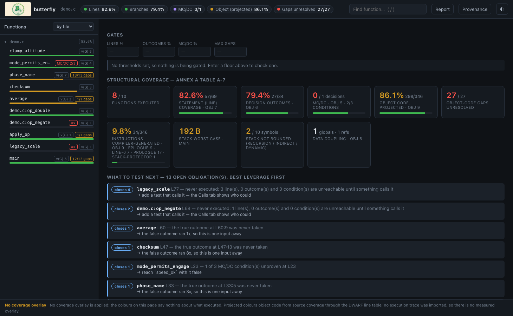
$ (cd target/showcase/quickstart && ./build.sh) build: toolchain clang -> Apple clang version 17.0.0 (clang-1700.6.3.2) [clang] build: output build/ (removing and recreating) build: profile rdr /Applications/Xcode.app/Contents/Developer/Toolchains/XcodeDefault.xctoolchain/usr/bin/llvm-profdata build: mc/dc supported, and enabled build: [1/4] compiling instrumented:-fprofile-instr-generate -fcoverage-mapping -fcoverage-mcdc build: src/demo.c build: [2/4] running build/demo-instr (stdout -> build/run.txt) build: [3/4] merging the profile and exporting coverage build: coverage.json is 7609 bytes build: [4/4] building the object code under analysis (no instrumentation) build: src/demo.c build: dsymutil: linking the debug map into build/demo.dSYM build: wrote 11 files into build/ build: next butterfly doctor build ok: build/ exit 0
$ butterfly doctor target/showcase/quickstart/build directory : target/showcase/quickstart/build coverage : target/showcase/quickstart/build/coverage.json object : target/showcase/quickstart/build/demo stack : 1 .su file(s) note 1 instrumented object(s) ignored: demo-instr exit 0
Reproduce it
From the repository root, with butterfly on your PATH (cargo install --path crates/cli, or export PATH="$PWD/target/debug:$PATH" after cargo build). The build and section commands are the ones the capture run executed. The viewer was started by the browser-check harness on a free --listen port, with a sidecar of its own where the butterfly serve line names none and a token file of its own where the line names one. Function and file ids in a URL are assigned at ingest; if yours differ, pick the function in the sidebar.
# examples/c ./examples/c/build.sh butterfly ingest examples/c/build --source-root examples/c -o examples/c/build/evidence.json # the capture harness creates its scratch directory before it runs anything mkdir -p target/showcase # this section rm -rf target/showcase/quickstart && mkdir -p target/showcase/quickstart/src && cp examples/c/demo.c target/showcase/quickstart/src/ && cp templates/build.sh target/showcase/quickstart/ (cd target/showcase/quickstart && sed -e 's/^PROJECT=myproject /PROJECT=demo /' -e 's|^SRC="src/foo.c src/bar.c"|SRC="src/demo.c"|' -e 's/^INCLUDE="-Iinclude"/INCLUDE=""/' build.sh > build.sh.new && mv build.sh.new build.sh && chmod +x build.sh) (cd target/showcase/quickstart && ./build.sh) butterfly doctor target/showcase/quickstart/build butterfly ingest target/showcase/quickstart/build --source-root target/showcase/quickstart -o target/showcase/quickstart/evidence.json # the viewer (Ctrl-C to stop) butterfly serve target/showcase/quickstart/evidence.json # open http://127.0.0.1:8787/#/overview
Language and toolchain matrix
91 rows from support/matrix.toml, which a test checks textually against the examples, evidence lines and proof tests they name (#151): 22 supported, 60 handled with caveats, 9 not supported. The third column is the point of the table.
language
C
| what | state | caveat, or the reason it is not supported | example | proof |
|---|---|---|---|---|
| MC/DC of a multi-condition decision, from clang's -fcoverage-mcdc c.mcdc |
Supported | cexamples/c/demo.c:23 |
crates/ingest/tests/e2e_demo_c.rs::demo_c_end_to_end | |
| switch statement c.switch |
Handled, with caveats | A sixteen-case switch compiled to a jump table at -O0 and -O2: the table is read from the image, each case is an edge from the indirect branch, no case block is called unreachable and no case region a predicated decision. Only clang's table shapes are read (AArch64 word, halfword and byte entries; x86-64 32-bit offsets), and the x86-64 path has been run here on Mach-O and on rust-lld-linked x86-64 Linux ELF images of this example; until #325 the ELF disassembly's single-# comment hid the table's address, so no ELF table was read. Any other shape leaves the branch unresolved. The indirect branch stays a gap for a reviewer to confirm the table is the switch's. A small switch like examples/c's phase_name compiles to compares on AArch64; on x86-64 clang lowers it to a table too, which is read the same way. |
c-switchexamples/c-switch/switch.c:20 |
crates/ingest/tests/jump_table.rs::the_o0_switch_is_read_through_its_table |
| Internal-linkage (static) functions, kept apart from an extern of the same name c.static-function |
Supported | c-header-inlineexamples/c-header-inline/src/aux.c:9 |
crates/ingest/tests/dup_static_symbols.rs::a_static_and_an_extern_of_one_name_stay_apart | |
A header static inline compiled into several translation unitsc.header-static-inline |
Supported | c-header-inlineexamples/c-header-inline/inc/geom.h:15 |
crates/ingest/tests/dup_static_symbols.rs::each_translation_units_copy_keeps_its_own_object_code | |
| Several translation units linked into one image, including two files of the same name c.multi-unit |
Handled, with caveats | Each unit is analysed apart, but where units share a file name (src/alpha/dup.c, src/beta/dup.c) llvm-cov qualifies both statics as dup.c:tally and keeps a coverage record for only one: the other copy is left unattributed and out of the covered totals, with an image finding naming it, rather than credited to the first unit's function. |
c-header-inlineexamples/c-header-inline/build.sh:28 |
crates/ingest/tests/dup_static_symbols.rs::units_with_the_same_basename_are_not_one_unit |
| A static function the coverage export has no record for, beside a covered extern of the same name c.static-with-no-coverage-record |
Supported | c-unprofiled-staticexamples/c-unprofiled-static/src/quiet.c:13 |
crates/ingest/tests/dup_unprofiled_static.rs::an_unbound_call_keeps_its_gap_though_another_unit_covers_the_name | |
| Dispatch through a table of function pointers c.function-pointer-table |
Handled, with caveats | That op_double and op_negate are held by OPS, are the candidates of apply_op's call and are not dead code is asserted on the CI-built example (crates/ingest/tests/e2e_demo_c.rs), on every host: in an x86-64 Linux PIE the table's words are R_*_RELATIVE relocations the file holds as zero, and until #325 G1 both functions read as dead there. How an indirect call is drawn in the call graph is proven on hand-built evidence. The same construct in examples/c-lib (TASKS[idx](arg) in sched.c) is asserted on its image by c_lib_arch.rs: the call is recorded as indirect and the stack chains through it are reported unbounded. Tracked in #175. |
cexamples/c/demo.c:69 |
ui/callgraph.test.cjs::a chain through a candidate edge is a hypothesis, and stays one |
| Direct recursion c.recursion |
Handled, with caveats | CI builds the example, but the test proves the call-graph model on hand-built evidence; no test asserts what butterfly reports for the recursion in this example. Tracked in #175. | c-callgraphexamples/c-callgraph/depth.c:46 |
ui/callgraph.test.cjs::recursion terminates and is drawn as a cycle rather than a second node |
| Mutual recursion c.mutual-recursion |
Handled, with caveats | CI builds the example, but the test proves the call-graph model on hand-built evidence; no test asserts what butterfly reports for the recursion in this example. Tracked in #175. | c-callgraphexamples/c-callgraph/depth.c:57 |
ui/callgraph.test.cjs::mutual recursion terminates |
| A static library archive (.a) passed as the object c.static-archive |
Not supported | Refused by design, with a message saying to link the library into a test image or pass its members: an archive has no single control-flow graph. | none | |
| An unlinked object file (.o) c.unlinked-object |
Handled, with caveats | Shown on the library's five objects from build-lib.sh, against the same library linked with its harness. Every object is named UNLINKED in the evidence; only the first object's symbols, stack and data coupling are analysed, global-data references stay relocations so coupling is not reported, stack chains stop at the unit boundary, and with no entry point no dead code is claimed. Linking the library with its harness is the supported route. |
c-libexamples/c-lib/build-lib.sh:30 |
crates/ingest/tests/unlinked_objects.rs::unlinked_objects_under_report_coupling_stack_and_the_entry_point |
| Dynamic stack frames: alloca and variable-length arrays c.dynamic-frame |
Handled, with caveats | A VLA and an alloca are reported not bounded, reason "dynamic frame (alloca / VLA)", and so is every caller above them; the worst case shown is the static part of the frame. The .su says so where there is one; without it (and .stack_sizes leaves such functions out) the run-time sp write is recognised in the function body -- until #168 that path reported the VLA bounded by its static frame. The body scan knows clang's AArch64, x86-64, Arm and RISC-V shapes and errs towards dynamic within them (a register-sized adjustment it cannot tell from a VLA reads as dynamic), but a shape within them it does not know reads as a static frame; on any other architecture the prologue is not read either, so without a .su the frame is unknown and the stack is not bounded. Its x86-64 shape was checked on clang's disassembly here, and runs on an ingested x86-64 image only in hosted CI. On AArch64 Darwin such a function calls the stack probe ___chkstk_darwin through its GOT slot (adrp/ldr/blr x16); the slot is resolved to the symbol the image binds it to, so the probe is a direct, runtime-check helper call and not a function-pointer call -- until #271 it read as an indirect call. The same resolution covers ELF R_*_GLOB_DAT slots (AArch64 adrp/ldr/blr, x86-64 call *foo@GOTPCREL(%rip)), checked here on lld-linked images and in unit tests, not on an ingested ELF image in this example, and, in a position-independent ELF image, .got slots an R_*_RELATIVE relocation fills with the start of a function of the image (#325). |
c-constructsexamples/c-constructs/constructs.c:23 |
crates/ingest/tests/c_constructs.rs::a_vla_and_an_alloca_are_unbounded_without_the_su |
| goto c.goto |
Handled, with caveats | A goto is an ordinary jump in the object-code graph: a cleanup path, a backward retry and a goto into a loop body (irreducible flow) all come out with no block called unreachable, the never-taken gotos and their labels' code uncovered, and the back edge covered. The shared return block of goto_cleanup borrows the closing brace, which llvm-cov counts inside the zero-count undo_a: label; it is projected covered by inference, because the covered return rc; block (the only code of its line, no call) jumps to it unconditionally, and shown as shared-line with that reasoning. Until #270 it read uncovered. The rule proves entry only along such an edge: a shared return reached only from blocks whose own evidence is shared, or through a call, keeps the projection of its borrowed line. |
c-constructsexamples/c-constructs/constructs.c:59 |
crates/ingest/tests/c_constructs.rs::goto_paths_are_edges_and_the_untaken_ones_are_uncovered |
| Unions c.union |
Handled, with caveats | A union is one object: a global's data coupling and a local's variable accesses are attributed to the whole union, never to a member, so writing it as float and reading it as uint32_t shows as a write and a read of the same variable -- true of the storage, silent on the type pun. Local accesses are read on AArch64 only; elsewhere the variable is listed with the reason. |
c-constructsexamples/c-constructs/constructs.c:103 |
crates/ingest/tests/c_constructs.rs::unions_and_bitfields_are_whole_objects |
| Bitfields c.bitfield |
Handled, with caveats | A bitfield access is attributed to the whole struct, not the field, and a write to one field is the read-modify-write of the word that holds it: it shows as a read and a write of the struct (as a global's data coupling, and as a local's accesses on AArch64). Which field, or which neighbouring fields the write preserved, is not reported. | c-constructsexamples/c-constructs/constructs.c:125 |
crates/ingest/tests/c_constructs.rs::unions_and_bitfields_are_whole_objects |
| Variadic functions defined by the project c.varargs |
Handled, with caveats | A variadic function has a static, bounded frame, its va_arg loop is an ordinary decision, and nothing is called unreachable. va_start takes the va_list's address, so what va_arg reads through it is not attributed, and the variable says so. On AArch64 Darwin va_list is a plain pointer; on x86-64 (and AAPCS64 Linux) clang's va_arg branches between the register save area and the stack, and the prologue tests %al before saving vector registers: compiler branches with no source decision, which by butterfly's rules would be extra-object-branch gaps, with the stack-area path projected covered from its line when the run never took it. That shape was read from clang's x86-64 disassembly here, not from an ingested x86-64 image. |
c-constructsexamples/c-constructs/constructs.c:161 |
crates/ingest/tests/c_constructs.rs::a_variadic_function_has_a_bounded_frame_and_an_untracked_va_list |
| Macros that expand to control flow c.control-flow-macro |
Handled, with caveats | llvm-cov locates a macro's branch regions at the #define; butterfly places them at the macro's use, where the object code is, so each use is a decision on its own line and its never-run return is projected uncovered. Until #168 they were dropped: the object branches read as compiler-generated and the never-run return projected covered from the use line. A multi-condition (MC/DC) decision inside a macro is placed at the use as well, its conditions in the #define's order; until #269 it was reported at the #define line as a predicated decision with no object code. The LLVM 18 export layout (Apple clang 17, clang 18) names no file for an MC/DC decision, so it is recovered from where the decision's conditions lie; when that does not settle it (two uses of one macro in a function with different MC/DC results) the decision is not shown and a caveat names it. The LLVM 19+ layout, which states the file, is covered by unit tests only: no host here exports it. Everything a macro expands to shares its use line, so which part of the expansion an instruction implements is inferred, not read. |
c-constructsexamples/c-constructs/constructs.c:180 |
crates/ingest/tests/c_constructs.rs::a_decision_inside_a_macro_is_placed_at_the_macro_use |
| setjmp / longjmp c.setjmp-longjmp |
Not supported | Not claimed anywhere and exercised by nothing. | none | |
| Inline assembly in C c.inline-assembly |
Not supported | Not claimed anywhere, and no C or C++ example uses it. The Rust inline assembly of examples/rust-qemu (its bare-metal start-up and exit) is not claimed as support either, and no test examines how butterfly reads it. | none |
C++
| what | state | caveat, or the reason it is not supported | example | proof |
|---|---|---|---|---|
| Same-named functions in anonymous namespaces of different units cpp.anonymous-namespace |
Supported | cpp-header-inlineexamples/cpp-header-inline/src/geom.cpp:5 |
crates/ingest/tests/dup_cpp_symbols.rs::anonymous_namespace_copies_keep_their_own_unit | |
A header inline function compiled into several translation unitscpp.header-inline |
Supported | cpp-header-inlineexamples/cpp-header-inline/inc/geom.hpp:11 |
crates/ingest/tests/dup_cpp_symbols.rs::the_header_inline_is_attributed | |
| Itanium name demangling, including llvm-cov's file-qualified form cpp.demangling |
Supported | cpp-header-inlineexamples/cpp-header-inline/src/geom.cpp:9 |
crates/ingest/tests/dup_cpp_symbols.rs::anonymous_namespace_copies_keep_their_own_unit | |
| A function template instantiated at two types cpp.template |
Handled, with caveats | Each instantiation is a function of its own, projected from its own coverage record; the file's source view is the sum over them, so a line reads covered there if either type ran it. This example's two instantiations take the same path, so it does not show them differing; examples/rust-constructs does (see rust.generics). Tracked in #158. | cppexamples/cpp/flight.cpp:68 |
crates/ingest/tests/e2e_cpp_constructs.rs::cpp_example_is_inventoried_with_the_cpp_vocabulary |
| Virtual dispatch through a vtable cpp.virtual-dispatch |
Handled, with caveats | The call is an indirect branch: its target set is not resolved, and a stack bound through it is refused rather than guessed. The test here asserts only that the overriding apply() is inventoried as virtual; a virtual call read as an indirect branch is asserted on examples/cpp-exceptions and examples/cpp-constructs. Tracked in #158. | cppexamples/cpp/flight.cpp:80 |
crates/ingest/tests/e2e_cpp_constructs.rs::cpp_example_is_inventoried_with_the_cpp_vocabulary |
| MC/DC of a multi-condition decision in C++ cpp.mcdc |
Handled, with caveats | The example is built in CI, but no test asserts C++ MC/DC on it. Tracked in #158. | cppexamples/cpp/build.sh:18 |
|
| Static initialisers: the constructor function the compiler emits for globals cpp.static-initialiser |
Handled, with caveats | The example is built in CI, but no test asserts this. _GLOBAL__sub_I_* has no source statement behind it and is listed as a dead-code candidate, because the runtime calls it and nothing in the image does. Tracked in #158. |
cpp-libexamples/cpp-lib/src/sched.cpp:42 |
|
| A class hierarchy whose key function lives in another translation unit cpp.cross-file-vtable |
Handled, with caveats | The example is built in CI, but no test asserts the cross-file key-function behaviour. Tracked in #158. | cpp-libexamples/cpp-lib/include/flight/sched.hpp:15 |
|
| Exceptions: throw, catch, landing pads and unwind tables cpp.exceptions |
Handled, with caveats | A throw, a try/catch and the destructors run on unwind, built with exceptions and without. Landing pads are read from the exception table (Mach-O __unwind_info here; ELF .eh_frame on the x86-64 image hosted CI builds, where this test runs too, and on two lld-linked images in crates/ingest/tests/req_e_elf_images.rs) and drawn as exception edges, so no pad is called unreachable; an exception edge is never projected covered, because a pad's lines also run on the normal path. The calls into the C++ runtime's throw, catch, unwind and dynamic_cast machinery are classified as the language runtime; a landing pad's call to __clang_call_terminate is classified as a runtime check. The unwinder's own stack use when a throw happens is not counted, and whether each exception edge was taken is not in the evidence. |
cpp-exceptionsexamples/cpp-exceptions/flight.cpp:37 |
crates/ingest/tests/cpp_exceptions.rs::landing_pads_are_reached_through_the_exception_table |
| RTTI: dynamic_cast and typeid cpp.rtti |
Handled, with caveats | A dynamic_cast, built with RTTI and without. The call to __dynamic_cast is classified as the language runtime; the typeinfo it reads is data and is not analysed. typeid is not exercised. | cpp-exceptionsexamples/cpp-exceptions/flight.cpp:67 |
crates/ingest/tests/cpp_exceptions.rs::the_exception_and_rtti_runtime_is_classified |
| Lambdas cpp.lambda |
Handled, with caveats | Every closure's operator() is matched to its object code, whether it is named $_N (in a non-inline function) or {lambda(int, int)#1} (in an inline one); the calls into them from a template, a direct call and an inline member are drawn, and the one converted to a function pointer, reached through the compiler's __invoke, is not reported as dead code. A lambda converted to a function pointer brings a conversion operator and a static __invoke that have no coverage record: each is a function of its own, projected unknown rather than from its enclosing function's lines (#273), and the call through the pointer is an indirect branch whose target is not resolved, so the stack above it is unbounded. Asserted on arm64 Mach-O and on the x86-64 ELF image hosted CI builds. | cpp-constructsexamples/cpp-constructs/constructs.cpp:113 |
crates/ingest/tests/cpp_constructs.rs::every_lambda_is_matched_to_its_object_code_and_its_callers |
| Operator overloading cpp.operator-overloading |
Supported | cpp-constructsexamples/cpp-constructs/constructs.cpp:95 |
crates/ingest/tests/cpp_constructs.rs::overloaded_operators_are_functions_with_callers | |
| User-written constructors and destructors cpp.constructor-destructor |
Handled, with caveats | Every variant (C1/C2, D0/D1/D2) is attributed to its source function, and the body the coverage record names is the function's object code, so a derived constructor is shown calling its base's; a local's destructor is a call on the closing brace. The other variants are analysed too, as the function's variants: blocks, gaps and a projected status, each address once. The instrumentation counts only the body, so where the body ran, source coverage cannot say whether a variant did: its instructions are projected unknown, not covered, it is an uncounted-variant gap, and its bytes are not in the image's covered-bytes figure. Channel's deleting destructor, which never runs, is therefore reported but not shown as never run; a trace is what shows that. A variant of a body that never ran is projected uncovered. Asserted on arm64 Mach-O, where C1 and D1 are separate thunks; on the x86-64 ELF image hosted CI builds they are aliases of the body and only D0 is a variant, which every_constructor_and_destructor_variant_is_analysed_once asserts there in hosted CI. | cpp-constructsexamples/cpp-constructs/constructs.cpp:49 |
crates/ingest/tests/cpp_constructs.rs::a_constructor_is_analysed_from_the_variant_that_has_its_body |
| new / delete cpp.new-delete |
Handled, with caveats | The example's calls to the global operator new, new[] and delete[] are core-lib helper calls, the class std:: code gets; a delete through a base pointer is an extra object branch (the null check) and an indirect branch (the virtual deleting destructor). The deleting destructor's own call to operator delete is a core-lib helper call in that variant, though whether a given deleting destructor ran is not established by source coverage (see cpp.constructor-destructor). A class-specific operator new is classified as project code by a unit test of the classifier (synthetic.rs::helper_classification), not by this example. | cpp-constructsexamples/cpp-constructs/constructs.cpp:133 |
crates/ingest/tests/cpp_constructs.rs::new_and_delete_are_calls_into_the_cpp_runtime |
| The C++ standard library: containers, algorithms, smart pointers cpp.standard-library |
Not supported | Not claimed and exercised by nothing: the C++ examples include only <cstdint>, <cstdio> and <cstring>. | none |
Rust
| what | state | caveat, or the reason it is not supported | example | proof |
|---|---|---|---|---|
| MC/DC from Rust rust.mcdc |
Not supported | rustc cannot supply it: current nightlies reject -Zcoverage-options=mcdc and stable emits no branch regions, so the example yields statement and branch coverage only. | rust |
|
Statement and branch coverage of if and matchrust.branch-coverage |
Handled, with caveats | Only if conditions have outcome coverage: rustc emits no branch region for a match arm, so a match is covered arm by arm as lines. Branch regions need a nightly rustc (see toolchain.rustc-nightly). |
rustexamples/rust/demo.rs:32 |
crates/ingest/tests/e2e_rust_constructs.rs::if_conditions_are_branch_regions_and_match_arms_are_lines |
| Rust symbol demangling rust.demangling |
Supported | rustexamples/rust/demo.rs:9 |
crates/ingest/tests/e2e_rust_constructs.rs::rust_symbols_are_demangled_and_join_across_the_two_compilers | |
| Compiler-inserted runtime checks (overflow, bounds, division) classified as such rust.runtime-check |
Handled, with caveats | The checks are classified as runtime checks, but the projection calls them covered because their line ran, though no input divides by zero; only a trace shows they did not run (see rust.panic-path-measured). They are object code with no source counterpart, to be justified, not covered. On x86-64 Linux rustc calls the panic through a GOT slot (call *slot(%rip)), which is read as the direct call it is; until #325 it was an indirect call there, and the checks went unclassified. |
rustexamples/rust/demo.rs:63 |
crates/ingest/tests/e2e_rust_constructs.rs::the_division_checks_in_average_are_classified_as_runtime_checks |
| Closures: capturing by reference and by move, passed as FnMut and FnOnce to generic functions rust.closure |
Handled, with caveats | A closure whose body rustc maps no region in (|_| count += 1 here) gets no coverage record. butterfly lists it as a function with no record, inside the function it is written in, on the line the DWARF gives: its object code is analysed but projected neither covered nor uncovered, and carries no-coverage-record gaps, while the line it is written on reads covered through the enclosing function's counts. Whether it ran is not established without a trace. The construct inventory counts closures lexically. |
rust-constructsexamples/rust-constructs/constructs.rs:86 |
crates/ingest/tests/rust_constructs.rs::closures_are_functions_of_their_own_called_by_their_own_generic_copy |
| Stack frames recovered from the prologue, since rustc writes no .su file rust.prologue-frame |
Handled, with caveats | A prologue-derived frame is an estimate, labelled as one, not a size the compiler reported. The test asserts the label, not the byte counts, which are the host code generator's; prologue reading itself is unit-tested on hand-written instruction lists. | rust-libexamples/rust-lib/build.sh:23 |
crates/ingest/tests/e2e_rust_constructs.rs::every_rust_frame_is_a_prologue_estimate_labelled_as_one |
| Atomic statics as the globals of data coupling rust.atomic-global |
Handled, with caveats | At -Copt-level=0 every access is a call into core::sync::atomic, so a function is recorded as taking the static's address, not as reading or writing it. Which functions those are is asserted on macOS/AArch64 and x86-64 Linux only; elsewhere the test asserts only that the statics are globals of the image. | rust-libexamples/rust-lib/src/state.rs:17 |
crates/ingest/tests/e2e_rust_constructs.rs::the_atomic_statics_are_globals_of_the_data_coupling |
| Dispatch through a table of fn pointers rust.fn-pointer-table |
Handled, with caveats | The call is an indirect-branch gap whose candidates are the functions its caller takes the address of and those held in any data it reads, each table read as far as its symbol extends; here the caller takes no address, so they are the table's. An ELF symbol has a size, so on x86-64 Linux they are exactly the three; a Mach-O symbol has none, so on macOS the table is read up to the next data symbol and the candidates take in the std vtables after it. That the table's entries are among them, and are held by the table, is asserted on macOS/AArch64 and x86-64 Linux only. In a position-independent ELF image the table's words are R_*_RELATIVE relocations the file holds as zero; they are read through the relocation, and until #325 G1 they were not, so on Linux the call had no candidates. |
rust-libexamples/rust-lib/src/sched.rs:31 |
crates/ingest/tests/e2e_rust_constructs.rs::the_task_table_dispatch_is_an_indirect_call |
A no_std, no_main bare-metal image (aarch64-unknown-none-softfloat), analysed beside a host build of the same craterust.no-std-bare-metal |
Handled, with caveats | Verified locally, not in hosted CI, and only on a host that has QEMU (see feature.measured-coverage). A bare-metal image has no filesystem to write a profile to, so the source coverage comes from an instrumented host build and is matched to the target image by demangled name: sound only while both compile the same source the same way, and anything behind cfg(target_os = "none") has no projection at all. Tracked in #164. | rust-qemuexamples/rust-qemu/src/main.rs:17 |
crates/ingest/tests/e2e_rust_qemu.rs::a_qemu_trace_yields_measured_instruction_and_outcome_coverage |
| The Level A route: object-level branch outcomes measured from a trace, where rustc supplies no MC/DC rust.level-a-route |
Handled, with caveats | Verified locally, not in hosted CI, and only on a host that has QEMU (see feature.measured-coverage). Measured object branch outcomes are not MC/DC: whether they satisfy objective 5 for a given compiler and options is the argument CAST-17 describes, and it is the applicant's to make. The trace is from QEMU, an emulator and not the target, on one CPU; butterfly is not a qualified tool. Tracked in #164. | rust-qemuexamples/rust-qemu/src/monitor.rs:38 |
crates/ingest/tests/e2e_rust_qemu.rs::the_trace_confirms_what_was_never_run |
| Bounds- and overflow-check panic paths: projected covered by their line, measured never executed rust.panic-path-measured |
Handled, with caveats | Verified locally, not in hosted CI, and only on a host that has QEMU (see feature.measured-coverage). At -Copt-level=0 only. The trace shows the panic paths did not run; it does not show whether they need to be, so they remain object code with no source counterpart for a reviewer to account for (see rust.runtime-check for their classification). Tracked in #164. | rust-qemuexamples/rust-qemu/src/monitor.rs:59 |
crates/ingest/tests/e2e_rust_qemu.rs::the_trace_contradicts_the_projection_on_the_panic_paths |
| An indirect call through a fn-pointer table, resolved to the targets a trace actually reached rust.indirect-call-measured |
Handled, with caveats | Verified locally, not in hosted CI, and only on a host that has QEMU (see feature.measured-coverage). The measured targets are those of one traced campaign, not the set the call can reach: a candidate the trace never reached (cmd_hold here) stays address-taken, not proven unreachable. Tracked in #164. | rust-qemuexamples/rust-qemu/src/monitor.rs:86 |
crates/ingest/tests/e2e_rust_qemu.rs::the_trace_confirms_what_was_never_run |
| Generic functions and their monomorphised copies rust.generics |
Handled, with caveats | Each copy (limit::<i32>, limit::<u64>) is a function of its own, with its own symbol, branch record, line figures and object-code projection. The file's source view is the sum over the copies, as llvm-cov makes it: a line reads covered there if any copy ran it. Copies that share one name (the same crate built twice) are merged into one function instead. |
rust-constructsexamples/rust-constructs/constructs.rs:14 |
crates/ingest/tests/rust_constructs.rs::each_monomorphised_copy_is_projected_from_its_own_record |
| Trait objects and dyn dispatch rust.dyn-dispatch |
Handled, with caveats | The call through the vtable is an indirect-branch gap with no static candidates: the vtable arrives as an argument, so the target set is not resolved (as for cpp.virtual-dispatch). The impls it reaches have no direct caller and are not reported dead, because their vtables hold their addresses; that, and that the call has no static candidates, is asserted on macOS/AArch64 and x86-64 Linux only. On Linux a vtable's words are R_*_RELATIVE relocations the file holds as zero; until #325 G1 they were not read, and every such impl was a dead-code candidate there. An impl whose type is never built (Bypass here) has no vtable, and rustc emits no code for it. |
rust-constructsexamples/rust-constructs/constructs.rs:63 |
crates/ingest/tests/rust_constructs.rs::a_dyn_call_is_an_indirect_branch_and_the_impls_behind_it_are_not_dead |
| macro_rules! expansions that contain decisions rust.macro-rules |
Handled, with caveats | rustc emits no branch region for a condition inside a macro expansion, so the decision's outcomes are not in the source coverage at all. The image's line table puts the expanded code on the macro's definition, not on each use, so every use lands on that one line. That line has no count: its object code is projected neither covered nor uncovered and carries not-instrumented and extra-object-branch gaps, while the using lines read covered. Only a trace measures the outcomes (see rust.level-a-route). | rust-constructsexamples/rust-constructs/constructs.rs:105 |
crates/ingest/tests/rust_constructs.rs::a_macro_expanded_decision_lands_on_the_definition_with_no_count |
toolchain
Toolchain
| what | state | caveat, or the reason it is not supported | example | proof |
|---|---|---|---|---|
| clang with llvm-cov source-based coverage toolchain.clang |
Supported | cexamples/c/build.sh:17 |
crates/ingest/tests/e2e_demo_c.rs::demo_c_end_to_end | |
| GCC with gcov's JSON export toolchain.gcc-gcov |
Handled, with caveats | butterfly reads no MC/DC from gcov: condition coverage from -fcondition-coverage is noted in a caveat, not read as MC/DC, and gcov does not say which outcome of a branch is the true one. The reader is proven on hand-written exports (crates/ingest/tests/gcov.rs); the only tests that read the built example are the doctor's, which are compiled on Linux alone, and ci-local builds the example on Linux alone. |
c-gccexamples/c-gcc/build.sh:69 |
crates/cli/tests/doctor.rs::a_gcc_instrumented_binary_is_recognised_and_not_analysed |
| rustc nightly with -Cinstrument-coverage -Zcoverage-options=condition toolchain.rustc-nightly |
Handled, with caveats | No MC/DC (see rust.mcdc), and the LLVM tools must be nightly's own: stable's llvm-profdata cannot merge nightly's profile. CI pins nightly-2026-08-10; another nightly may map coverage regions differently. | rustexamples/rust/build.sh:11 |
crates/ingest/tests/e2e_rust_constructs.rs::nightly_supplies_the_coverage_and_stable_builds_the_analysed_image |
| rustc stable, for the uninstrumented target build toolchain.rustc-stable |
Handled, with caveats | Stable emits no branch regions, so it builds the image that is analysed and nightly supplies the coverage. The two are joined by demangled name, which is sound only while both compile the same source the same way. | rustexamples/rust/build.sh:15 |
crates/ingest/tests/e2e_rust_constructs.rs::nightly_supplies_the_coverage_and_stable_builds_the_analysed_image |
architecture
Architecture
| what | state | caveat, or the reason it is not supported | example | proof |
|---|---|---|---|---|
| AArch64 arch.aarch64 |
Handled, with caveats | The only architecture with variable attribution. Hosted CI runs on x86-64 alone since #147, so this is exercised only when the suite runs on an AArch64 host, such as ci-local on Apple silicon. | c |
crates/ingest/tests/vars.rs::demo_c_carries_variables_with_ordered_accesses |
| x86-64 arch.x86-64 |
Handled, with caveats | The proof is compiled only on an x86-64 host and asserts the example's globals, their readers and writers, and the chain left unbounded by the call through the task table; examples/c's variables are asserted there too (crates/ingest/tests/vars.rs). It has run on an x86-64 Mach-O build under Rosetta and in hosted CI on the x86-64 ELF image it builds. Variables are listed but not attributed: each says the architecture is why. Frame sizes and totals are the compiler's, so only the shape of the chain is asserted. Tracked in #113. | c-lib |
crates/ingest/tests/c_lib_arch.rs::x86_64_c_lib_couples_globals_and_reports_the_unbounded_chain |
| RISC-V arch.riscv |
Not supported | Not yet demonstrated: there are RISC-V paths for branch conditions, prologues and data references, but no example, and the data-reference scanner has no test at all. Tracked in #161. | none |
Object format
| what | state | caveat, or the reason it is not supported | example | proof |
|---|---|---|---|---|
| Mach-O format.macho |
Handled, with caveats | Read from a real linked image only on a macOS host; hosted CI is Linux since #147. | c |
crates/ingest/tests/macho_entry.rs::a_macho_entry_lands_on_the_entry_symbol |
| ELF format.elf |
Handled, with caveats | Every example CI builds on Linux is an ELF image and hosted CI runs the example suites on it, but most of their assertions are written to hold on either format; few test an ELF-only path on an example: the C runtime's startup stubs may stay unattributed (dup_cpp_symbols.rs), a constructor's C1 and D1 are aliases of its body, so only D0 is a variant (cpp_constructs.rs), and a table is read to its symbol's size, so the fn-pointer table's candidates are exactly its three (e2e_rust_constructs.rs). The .eh_frame LSDA index, R_*_GLOB_DAT GOT calls, .rodata jump tables, data coupling and .stack_sizes are each asserted on two small lld-linked ELF images built from hand-written assembly (req_e_elf_images.rs), not on an example. Tracked in #278. |
c |
crates/ingest/tests/dup_cpp_symbols.rs::anonymous_namespace_copies_keep_their_own_unit |
| PE / COFF format.pe-coff |
Not supported | Not handled: butterfly recognises its header and would pass it to the generic object parser, but nothing beyond that is written for it, no example builds one and no test reads one. Tracked in #161. | none |
feature
Viewer
| what | state | caveat, or the reason it is not supported | example | proof |
|---|---|---|---|---|
| Overview dashboard feature.overview |
Handled, with caveats | The browser check asserts that the Overview renders on the example, not the figures it shows; ci-local runs it only where Playwright is installed. Tracked in #173. | c-per-test |
ui/browser/checks/requirements.cjs::overview-renders |
| Flow: the object-level control-flow graph with coverage overlay feature.flow |
Handled, with caveats | The browser check asserts that the tab renders for every function, not what the graph shows; block and edge construction is proven on hand-written instruction lists. Tracked in #174. | c-per-test |
ui/browser/checks/requirements.cjs::every-function-tab-renders |
| Calls: the expandable call graph feature.calls |
Handled, with caveats | CI builds the fixture made for this graph, but the graph model is proven on hand-built evidence: the tests that ingest the fixture check its counts, its gaps and that a repeated ingest gives the same answer, not the calls it draws. Tracked in #175. | c-callgraphexamples/c-callgraph/depth.c:73 |
ui/callgraph.test.cjs::a function with neighbours of its own is offered for expansion, a leaf is not |
| Object: every instruction with its source line and projected coverage feature.object |
Supported | Tracked in #176. | cexamples/c/demo.c:60 |
crates/ingest/tests/e2e_demo_c.rs::every_instruction_of_average_carries_its_source_line_and_projected_status |
| Gaps and their recorded resolutions feature.gaps |
Supported | Tracked in #177. | c |
crates/cli/tests/check_gate.rs::a_recorded_justification_counts_as_resolved |
| MC/DC: executed vectors and independence pairs per decision feature.mcdc |
Handled, with caveats | On the example the test asserts the decision's conditions and which of them have an independence pair, not the executed vectors or which vectors form each pair: an export in the LLVM 18 MC/DC record layout, which Apple clang writes, carries no vectors at all. How vectors and pairs are read is proven on hand-built evidence (crates/ingest/tests/mcdc_vectors_by_test.rs). Tracked in #178. | cexamples/c/demo.c:23 |
crates/ingest/tests/e2e_demo_c.rs::demo_c_end_to_end |
| Stack: frames from the compiler's .su files and the worst-case chain feature.stack |
Supported | Tracked in #179. | cexamples/c/build.sh:23 |
crates/cli/tests/build_stack_usage.rs::every_variant_ingests_its_stack_usage_file |
| Data coupling: which functions read and write each global feature.data |
Handled, with caveats | On the example, crates/ingest/tests/c_lib_arch.rs asserts who reads and writes each global, but on ELF it checks only the same-file accessors of g_state: a reference from another translation unit is loaded through the GOT, which the data-reference scanner does not follow. Tracked in #180. |
c-libexamples/c-lib/src/state.c:7 |
crates/ingest/tests/synthetic.rs::datarefs_aarch64_and_x86 |
| Variables: parameters and locals with every access, in static order feature.variables |
Handled, with caveats | AArch64 only; on any other architecture the panel says why it is empty. Tracked in #181, #163. | cexamples/c/demo.c:44 |
crates/ingest/tests/vars.rs::demo_c_carries_variables_with_ordered_accesses |
| Change impact: the commits that touched a function and what they oblige feature.changes |
Supported | Tracked in #182. | c |
crates/cli/tests/changes_cli.rs::c42b_each_commit_names_the_functions_it_touched |
| Requirement text beside the code feature.requirement-text |
Supported | Tracked in #183. | c-per-testexamples/c-per-test/llr.yaml:19 |
crates/cli/tests/serve_requirements.rs::the_statement_comes_back_and_the_analysis_only_on_request |
| Requirements x tests, and the claims gate that checks a project's own traceability feature.requirements-tests |
Supported | Tracked in #184. | c-per-testexamples/c-per-test/llr.yaml:53 |
crates/cli/tests/claims_gate.rs::the_fixtures_wrong_test_claim_is_caught_and_exits_three |
| Per-test attribution: which test entered which function and line feature.per-test |
Supported | Tracked in #184. | c-per-testexamples/c-per-test/build.sh:31 |
crates/ingest/tests/per_test.rs::a_function_lists_the_tests_that_entered_it |
| File view: the whole file, folded to findings feature.file-view |
Handled, with caveats | How a line is painted is proven on hand-written evidence; the File view is opened on an example only by the showcase screenshot capture, and no test asserts how it paints a line there. Tracked in #185. | c |
ui/lines.test.cjs::a reached line whose statement never ran is not painted covered |
| Comparing optimisation levels as switchable variants feature.compare |
Handled, with caveats | The browser check covers switching between variants, not what the Compare page says about them, and the one Rust test that reads the built variants, crates/ingest/tests/macho_entry.rs, is allowed to skip when they are absent. Tracked in #186. | cexamples/c/butterfly-build.toml:18 |
ui/browser/checks/variants.cjs::a-superseded-load-never-commits-over-a-newer-one |
| Go to definition, from a ctags index feature.go-to-definition |
Supported | Tracked in #193. | c-lib |
crates/ingest/tests/tags.rs::produce_indexes_functions_headers_and_types |
| Dead-code candidates in the linked image feature.dead-code |
Supported | Tracked in #196. | cexamples/c/demo.c:77 |
crates/ingest/tests/e2e_demo_c.rs::demo_c_end_to_end |
| The source-to-object review record feature.source-to-object-review |
Handled, with caveats | Saving and removing a review is proven in a real browser, which ci-local runs only where Playwright is installed. The construct inventory that guides the review picks its vocabulary from the file extension, so C++ written in a .h header is read with the C vocabulary. Tracked in #196, #162. |
c-per-test |
ui/browser/checks/review.cjs::a-review-saves-reloads-and-can-be-removed |
| Finding your way around: search, shortcuts, jumping between uncovered regions feature.navigation |
Handled, with caveats | Search is asserted on the example and the digit tab shortcuts on hand-written evidence; nothing asserts j/k or the ]/[ jump between uncovered regions. Tracked in #197, #157. |
c-per-test |
ui/browser/checks/requirements.cjs::search-narrows-and-navigates |
Command line
| what | state | caveat, or the reason it is not supported | example | proof |
|---|---|---|---|---|
| The static HTML report feature.report |
Supported | Tracked in #187, #156. | c-per-test |
crates/cli/tests/report_requirements.rs::the_report_quotes_each_requirement_and_names_its_baseline |
Gates: butterfly check thresholds and no-regressionfeature.gates |
Supported | Tracked in #188. | c |
crates/cli/tests/check_gate.rs::a_gap_ceiling_breach_names_the_worst_functions_and_exits_three |
butterfly doctor: is this build directory fit to analysefeature.doctor |
Handled, with caveats | The refusal this command exists for -- a directory holding only the instrumented binary, which must exit 3 -- is asserted on Linux alone, against the GCC example. Tracked in #189. | c |
crates/cli/tests/doctor.rs::a_complete_clang_build_passes_and_names_what_it_skipped |
butterfly run: build, doctor, ingest and report in one command, then servefeature.run |
Not supported | Not claimed as support: the showcase runs it once on examples/c (V18) and prints what it reported, but no test drives an example through it; its stop conditions are tested on throwaway projects (crates/cli/tests/run_pipeline.rs). Tracked in #190. | none | |
| Analysis baseline: what changed in flags, sources and object code since a recorded build feature.baseline |
Handled, with caveats | Flag and object-code changes are proven on hand-built evidence only; on the example, crates/ingest/tests/baseline_discovery_e2e.rs plants a changed source hash in a copied baseline and asserts the function is reported source-changed. CI also runs butterfly baseline and butterfly changes --baseline on the example and checks only that they exit cleanly. Tracked in #192. |
c |
crates/ingest/tests/synthetic.rs::baseline_compare_detects_flags_and_source_changes |
Build systems
| what | state | caveat, or the reason it is not supported | example | proof |
|---|---|---|---|---|
| CMake feature.build-systems.cmake |
Handled, with caveats | Not built in CI: scripts/verify-build-systems.sh, which scripts/ci-local.sh runs, checks this build's evidence equals examples/c-lib's own in its counts of files, functions, symbols, lines, branches and gaps (not byte for byte), and that ingest refuses the build with one stack-usage file taken away; where this build system's tool is not installed it prints a named SKIP and the run still passes. | build-systems/cmake |
scripts/verify-build-systems.sh |
| GNU make feature.build-systems.make |
Handled, with caveats | Not built in CI: scripts/verify-build-systems.sh, which scripts/ci-local.sh runs, checks this build's evidence equals examples/c-lib's own in its counts of files, functions, symbols, lines, branches and gaps (not byte for byte), and that ingest refuses the build with one stack-usage file taken away; where this build system's tool is not installed it prints a named SKIP and the run still passes. | build-systems/make |
scripts/verify-build-systems.sh |
| Bazel feature.build-systems.bazel |
Handled, with caveats | Not built in CI: scripts/verify-build-systems.sh, which scripts/ci-local.sh runs, checks this build's evidence equals examples/c-lib's own in its counts of files, functions, symbols, lines, branches and gaps (not byte for byte), and that ingest refuses the build with one stack-usage file taken away; where this build system's tool is not installed it prints a named SKIP and the run still passes. | build-systems/bazel |
scripts/verify-build-systems.sh |
Honesty
| what | state | caveat, or the reason it is not supported | example | proof |
|---|---|---|---|---|
| Provenance: every input named and hashed, with the caveats that apply feature.provenance |
Supported | Tracked in #194. | c |
crates/ingest/tests/e2e_demo_c.rs::provenance_names_every_input_of_the_example_and_carries_the_projection_caveat |
| Source revision: the git commit or SVN revision, and whether the files the build used are that revision's, judged by their hashes where the VCS allows it feature.source-revision |
Not supported | Not yet demonstrated: ingest records it for git and SVN, and it is tested on temporary repositories (git: clean, modified, submodules, SHA-256, fsmonitor; SVN: mixed revisions, switched, sparse, externals, keywords and eol-style, a locked or newer-format working copy), but no example shows a clean and a modified build. SVN files with svn:keywords, svn:eol-style or svn:special are judged by svn status, not by hash. Tracked in #304. | none | |
| Security posture: loopback by default, tokens, read-only network listeners feature.security |
Handled, with caveats | The proof needs no fixture and opens no example: butterfly serve refuses a plain-HTTP network listener before any evidence is read, so the test has no fixture to skip for. The example is named for the other half -- a token demanded on API requests, exercised against examples/c in crates/cli/tests/serve_auth.rs on the evidence and variant-listing routes -- and that test skips where the example has not been built. Tracked in #195. |
c |
crates/cli/tests/serve_exposure.rs::a_network_listener_refuses_to_start_without_insecure_http |
| Measured object coverage from an execution trace (--trace): QEMU -d in_asm,exec,nochain feature.measured-coverage |
Handled, with caveats | Verified locally, not in hosted CI, and only on a host that has the toolchain: scripts/ci-local.sh builds this example and runs its suite where qemu-system-aarch64, the aarch64-unknown-none-softfloat target and a nightly with llvm-tools are all present, and prints a named SKIP where they are not -- so a green local run on a host without them has not exercised this row. Coverage is exact but execution counts are an upper bound: QEMU logs a block on entry, and an abandoned entry that cannot be proven impossible is still counted. One single-CPU trace from an emulator; multi-CPU logs are read per CPU and proven on hand-written logs only, as are the execlog and address-list formats. The viewer's Measured overlay is tested on hand-built evidence (ui/measured.test.cjs), not on this example. Tracked in #164. | rust-qemuexamples/rust-qemu/build.sh:34 |
crates/ingest/tests/e2e_rust_qemu.rs::a_qemu_trace_yields_measured_instruction_and_outcome_coverage |
Documentation
| what | state | caveat, or the reason it is not supported | example | proof |
|---|---|---|---|---|
| Quickstart: from a built example to evidence, a summary and a report feature.quickstart |
Handled, with caveats | CI runs the documented commands from ingest to report on the example as a smoke test: each must exit cleanly and the report must be non-empty, and nothing more is asserted of them. Tracked in #199. | c |
scripts/ci-local.sh |
What we do not claim
A tool for certification work is only as useful as it is exact about where it stops. These are the project's own statements of where butterfly stops.
butterfly is not qualified. There is no DO-330 qualification data for it today, and nothing on this page is a claim of certification, of compliance, or of certification credit.
Where the project says so: docs/qualification/DO-330-assessment.md
Object-code coverage is projected from source coverage through the line table unless an execution trace was imported. Projected green means "implied by source coverage", not "executed". One example imports a trace —
examples/rust-qemu, shown in V28, and not built by hosted CI (#164) — and every other example on this page is projected only.Where the project says so: README.md, "Projected, measured, and the gap between them"
butterfly does not perform the source-to-object review (Table A-7 objective 9). A human does; butterfly presents instruction-level evidence for it and records the verdict. Neither projected nor measured coverage constitutes that review.
Where the project says so: docs/qualification/DO-330-assessment.md
A gap is a finding, never a verdict, and a recorded resolution is validated, not verified.
Where the project says so: README.md, "What it shows"
Exploratory builds (
butterfly build) are never certification evidence. The evidence that counts comes from your configuration-controlled build.Where the project says so: README.md, "Exploratory builds and variant comparison"
The Variables panel attributes accesses only on AArch64, and only for a variable the debug info places in one frame slot, which is what an unoptimised (-O0) build produces; it numbers accesses in static instruction order, which is not execution order. An empty list carrying a reason means "could not tell"; an empty list with no reason asserts that no instruction in the function addresses the variable's frame slot through the base register the debug info gives for it.
Where the project says so: ui/browser/checks/vars.cjs, crates/ingest/tests/vars.rs
No MC/DC from GCC (-fcondition-coverage is not MC/DC) and none from Rust (the instrumentation was removed upstream).
Where the project says so: README.md, "MC/DC does not come from GCC" for the first; "Rust (e.g. the ARINC 653 kernel)" for the second
Of
butterfly check's thresholds, only --min-lines and --min-outcomes read the evidence alone; the others also count recorded resolutions. --min-lines is line coverage, a proxy for statement coverage.Where the project says so: README.md, "Gating a build"
RISC-V has code paths, some of them unit-tested on hand-written instruction lists, but no example, so it is not supported; PE/COFF has no example and no handling beyond recognising its header, so it is not supported either. Neither is shown on this page.
Where the project says so: issue #161
The built-in server has no TLS and no per-client rate limiting: it only caps how many of its expensive requests run at once. Both belong to a reverse proxy in front of it.
Where the project says so: README.md, "Security posture"; SECURITY.md
The disassembly, the coverage export and the line table come from llvm-objdump, llvm-cov or gcov, and your compiler — external tools that butterfly reads and does not qualify.
Where the project says so: docs/qualification/DO-330-assessment.md §6.6
A static library archive (.a) passed as the object is not supported. Refused by design, with a message saying to link the library into a test image or pass its members: an archive has no single control-flow graph.
support/matrix.toml, row c.static-archive
setjmp / longjmp is not supported. Not claimed anywhere and exercised by nothing.
support/matrix.toml, row c.setjmp-longjmp
Inline assembly in C is not supported. Not claimed anywhere, and no C or C++ example uses it. The Rust inline assembly of examples/rust-qemu (its bare-metal start-up and exit) is not claimed as support either, and no test examines how butterfly reads it.
support/matrix.toml, row c.inline-assembly
The C++ standard library: containers, algorithms, smart pointers is not supported. Not claimed and exercised by nothing: the C++ examples include only <cstdint>, <cstdio> and <cstring>.
support/matrix.toml, row cpp.standard-library
MC/DC from Rust is not supported. rustc cannot supply it: current nightlies reject -Zcoverage-options=mcdc and stable emits no branch regions, so the example yields statement and branch coverage only.
support/matrix.toml, row rust.mcdc
RISC-V is not supported. Not yet demonstrated: there are RISC-V paths for branch conditions, prologues and data references, but no example, and the data-reference scanner has no test at all.
support/matrix.toml, row arch.riscv
PE / COFF is not supported. Not handled: butterfly recognises its header and would pass it to the generic object parser, but nothing beyond that is written for it, no example builds one and no test reads one.
support/matrix.toml, row format.pe-coff
butterfly run: build, doctor, ingest and report in one command, then serve is not supported. Not claimed as support: the showcase runs it once on examples/c (V18) and prints what it reported, but no test drives an example through it; its stop conditions are tested on throwaway projects (crates/cli/tests/run_pipeline.rs).support/matrix.toml, row feature.run
Source revision: the git commit or SVN revision, and whether the files the build used are that revision's, judged by their hashes where the VCS allows it is not supported. Not yet demonstrated: ingest records it for git and SVN, and it is tested on temporary repositories (git: clean, modified, submodules, SHA-256, fsmonitor; SVN: mixed revisions, switched, sparse, externals, keywords and eol-style, a locked or newer-format working copy), but no example shows a clean and a modified build. SVN files with svn:keywords, svn:eol-style or svn:special are judged by svn status, not by hash.
support/matrix.toml, row feature.source-revision
Qualification position
The criteria and the level are the applicant's determination for their own intended use, recorded in the PSAC; they are not properties of the tool. A project that claims credit only for the objectives butterfly automates — Table A-7 objectives 5, 6 and 7, and objective 8 — would classify it as a DO-178C §12.2.2 Criteria 3 tool, which DO-178C Table 12-1 puts at TQL-5 for Levels A to D. Claiming that some other activity is reduced because butterfly exists — dropping the human source-to-object review on the strength of the projection, or treating butterfly check's exit status as the verification of the coverage objectives — is a Criteria 2 use, and Criteria 2 is TQL-4 at Levels A and B.
butterfly is not qualified: no DO-330 life-cycle data exists for it today. It does not perform the source-to-object correspondence review (objective 9) — it presents instruction-level evidence for a human reviewer and records the verdict — and the exploratory-build function (butterfly build) is excluded from any set of qualified functions, because its output is object code. The project's detailed DO-330 assessment is maintained internally and is not published in this repository.
How this page is made
scripts/showcase.sh builds butterfly from the checkout, runs each example's build commands and each section's terminal commands verbatim from the repository root, keeps their real output and exit status, serves each example with the browser-check harness, which starts butterfly serve on a free port with its own scratch files rather than running the printed butterfly serve line, drives the viewer with Playwright and takes the screenshots. A command that ends with a status other than the one written in support/features.toml, or a screenshot that does not show the strings its section lists there as the point of it (its expect), fails the run. Nothing checks that a caption's every assertion is among those strings — that is a reading, and it is what the claims audit (#200) is for. What the host cannot show is rendered as not captured, with the reason.
Three things are altered, and only these: in terminal output the repository root, the temp directory and the home directory are replaced by <repo>, <tmp> and ~, and any ANSI colour a tool emitted despite NO_COLOR is stripped; the viewer is served on a free port by the harness, and URLs are printed with the default 127.0.0.1:8787 and without the harness's own ?shot= parameter; screenshots may be cropped to a pane, and one larger than the page's image budget is taken again as a JPEG. Text typed into dialogs by the script says that it is example text. Screenshots are never edited.